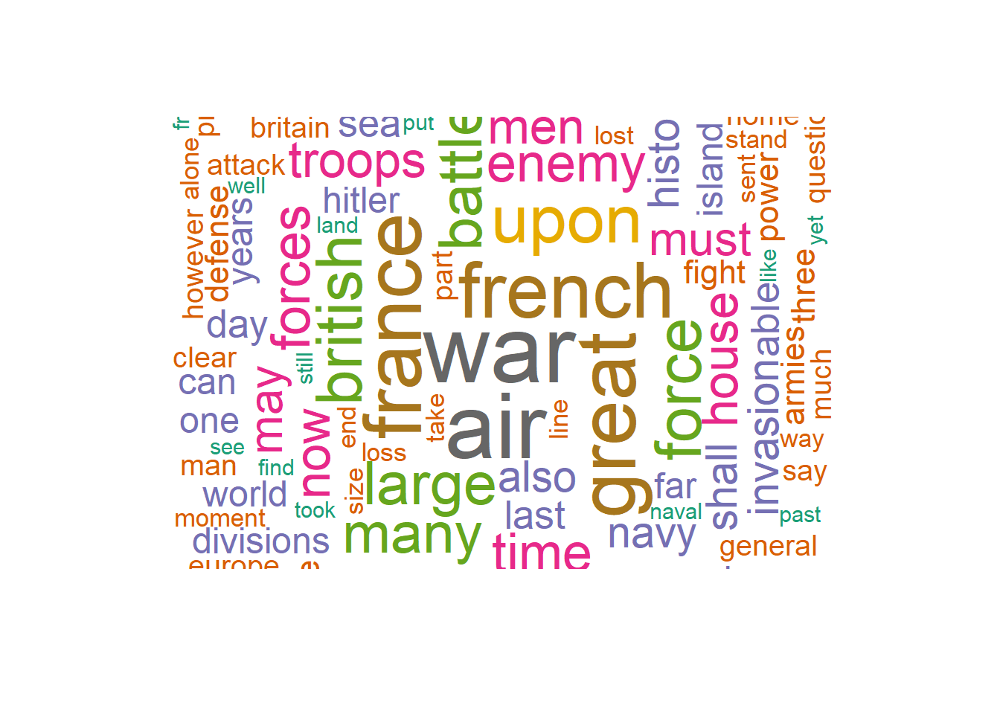
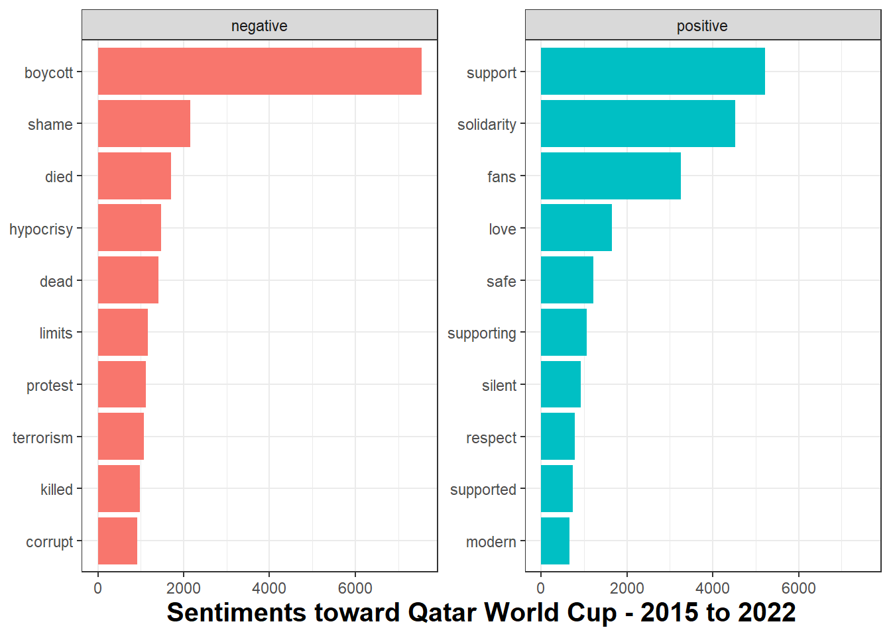
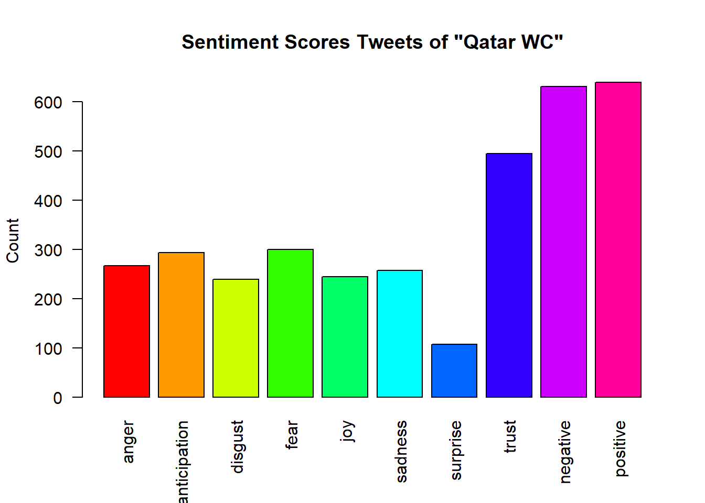

[1] "I am happy to join with you today in what will go down in\r\nhistory as the greatest demonstration for freedom in the history\r\nof our nation. "
[2] "Five score years ago a great American in whose symbolic shadow\r\nwe stand today signed the Emancipation Proclamation. This\r\nmomentous decree came as a great beckoning light of hope to\r\nmillions of Negro slaves who had been seared in the flames of\r\nwithering injustice. It came as a joyous daybreak to end the long\r\nnight of their captivity. "
[3] "But one hundred years later the Negro is still not free. One\r\nhundred years later the life of the Negro is still sadly crippled\r\nby the manacles of segregation and the chains of discrimination. "
words.vec <-VectorSource(mlk)
Check class of words
class(words.vec)
[1] "VectorSource" "SimpleSource" "Source"
Create Corpus and Turn words lowercase
# Create Corpus object for preprocessingwords.corpus <-Corpus(words.vec)inspect(words.corpus)
<<SimpleCorpus>>
Metadata: corpus specific: 1, document level (indexed): 0
Content: documents: 26
[1] I am happy to join with you today in what will go down in\r\nhistory as the greatest demonstration for freedom in the history\r\nof our nation.
[2] Five score years ago a great American in whose symbolic shadow\r\nwe stand today signed the Emancipation Proclamation. This\r\nmomentous decree came as a great beckoning light of hope to\r\nmillions of Negro slaves who had been seared in the flames of\r\nwithering injustice. It came as a joyous daybreak to end the long\r\nnight of their captivity.
[3] But one hundred years later the Negro is still not free. One\r\nhundred years later the life of the Negro is still sadly crippled\r\nby the manacles of segregation and the chains of discrimination.
[4] One hundred years later the Negro lives on a lonely island of\r\npoverty in the midst of a vast ocean of material prosperity.
[5] One hundred years later the Negro is still languishing in the\r\ncomers of American society and finds himself in exile in his own\r\nland.
[6] We all have come to this hallowed spot to remind America of\r\nthe fierce urgency of now. Now is the time to rise from the dark\r\nand desolate valley of segregation to the sunlit path of racial\r\njustice. Now is the time to change racial injustice to the solid\r\nrock of brotherhood. Now is the time to make justice ring out for\r\nall of God's children.
[7] There will be neither rest nor tranquility in America until\r\nthe Negro is granted citizenship rights.
[8] We must forever conduct our struggle on the high plane of\r\ndignity and discipline. We must not allow our creative protest to\r\ndegenerate into physical violence. Again and again we must rise\r\nto the majestic heights of meeting physical force with soul\r\nforce.
[9] And the marvelous new militarism which has engulfed the Negro\r\ncommunity must not lead us to a distrust of all white people, for\r\nmany of our white brothers have evidenced by their presence here\r\ntoday that they have come to realize that their destiny is part\r\nof our destiny.
[10] So even though we face the difficulties of today and tomorrow\r\nI still have a dream. It is a dream deeply rooted in the American\r\ndream.
[11] I have a dream that one day this nation will rise up and live\r\nout the true meaning of its creed: 'We hold these truths to be\r\nself-evident; that all men are created equal."
[12] I have a dream that one day on the red hills of Georgia the\r\nsons of former slaves and the sons of former slave owners will be\r\nable to sit together at the table of brotherhood.
[13] I have a dream that one day even the state of Mississippi, a\r\nstate sweltering with the heat of injustice, sweltering with the\r\nheat of oppression, will be transformed into an oasis of freedom\r\nand justice.
[14] I have a dream that little children will one day live in a\r\nnation where they will not be judged by the color of their skin\r\nbut by the content of their character.
[15] I have a dream today.
[16] I have a dream that one day down in Alabama, with its vicious\r\nracists, with its Governor having his lips dripping with the\r\nwords of interposition and nullification, one day right there in\r\nAlabama little black boys and black girls will be able to join\r\nhands with little white boys and white girls as sisters and\r\nbrothers.
[17] I have a dream today.
[18] I have a dream that one day every valley shall be exalted,\r\nevery hill and mountain shall be made low, the rough places\r\nplains, and the crooked places will be made straight, and before\r\nthe Lord will be revealed, and all flesh shall see it together.
[19] This is our hope. This is the faith that I go back to the\r\nmount with. With this faith we will be able to hew out of the\r\nmountain of despair a stone of hope. With this faith we will be\r\nable to transform the genuine discords of our nation into a\r\nbeautiful symphony of brotherhood. With this faith we will be\r\nable to work together, pray together; to struggle together, to go\r\nto jail together, to stand up for freedom forever, )mowing that\r\nwe will be free one day.
[20] And I say to you today my friends, let freedom ring. From the\r\nprodigious hilltops of New Hampshire, let freedom ring. From the\r\nmighty mountains of New York, let freedom ring. From the mighty\r\nAlleghenies of Pennsylvania!
[21] Let freedom ring from the snow capped Rockies of Colorado!
[22] Let freedom ring from the curvaceous slopes of California!
[23] But not only there; let freedom ring from the Stone Mountain\r\nof Georgia!
[24] Let freedom ring from Lookout Mountain in Tennessee!
[25] Let freedom ring from every hill and molehill in Mississippi.\r\nFrom every mountainside, let freedom ring.
[26] And when this happens, when we allow freedom to ring, when we\r\nlet it ring from every village and hamlet, from every state and\r\nevery city, we will be able to speed up that day when all of\r\nGod's children, black men and white men, Jews and Gentiles,\r\nProtestants and Catholics, will be able to join hands and sing in\r\nthe words of the old Negro spiritual, "Free at last! Free at\r\nlast! Thank God almighty, we're free at last!"
# Turn all words to lower casewords.corpus <-tm_map(words.corpus, content_transformer(tolower))
Warning in tm_map.SimpleCorpus(words.corpus, content_transformer(tolower)):
transformation drops documents
Use tm_map to remove punctuation, numbers, and stopwords
Warning in wordcloud(names(wordCounts), wordCounts, min.freq = 1, random.order
= FALSE, : interposition could not be fit on page. It will not be plotted.
Warning in wordcloud(names(wordCounts), wordCounts, min.freq = 1, random.order
= FALSE, : genuine could not be fit on page. It will not be plotted.
Warning in wordcloud(names(wordCounts), wordCounts, min.freq = 1, random.order
= FALSE, : mount could not be fit on page. It will not be plotted.
Warning in wordcloud(names(wordCounts), wordCounts, min.freq = 1, random.order
= FALSE, : symphony could not be fit on page. It will not be plotted.
Warning in wordcloud(names(wordCounts), wordCounts, min.freq = 1, random.order
= FALSE, : transform could not be fit on page. It will not be plotted.
Warning in wordcloud(names(wordCounts), wordCounts, min.freq = 1, random.order
= FALSE, : friends could not be fit on page. It will not be plotted.
Warning in wordcloud(names(wordCounts), wordCounts, min.freq = 1, random.order
= FALSE, : hampshire could not be fit on page. It will not be plotted.
Warning in wordcloud(names(wordCounts), wordCounts, min.freq = 1, random.order
= FALSE, : mountains could not be fit on page. It will not be plotted.
Warning in wordcloud(names(wordCounts), wordCounts, min.freq = 1, random.order
= FALSE, : pennsylvania could not be fit on page. It will not be plotted.
Warning in wordcloud(names(wordCounts), wordCounts, min.freq = 1, random.order
= FALSE, : prodigious could not be fit on page. It will not be plotted.
Warning in wordcloud(names(wordCounts), wordCounts, min.freq = 1, random.order
= FALSE, : california could not be fit on page. It will not be plotted.
Warning in wordcloud(names(wordCounts), wordCounts, min.freq = 1, random.order
= FALSE, : curvaceous could not be fit on page. It will not be plotted.
Warning in wordcloud(names(wordCounts), wordCounts, min.freq = 1, random.order
= FALSE, : slopes could not be fit on page. It will not be plotted.
Warning in wordcloud(names(wordCounts), wordCounts, min.freq = 1, random.order
= FALSE, : molehill could not be fit on page. It will not be plotted.
Warning in wordcloud(names(wordCounts), wordCounts, min.freq = 1, random.order
= FALSE, : catholics could not be fit on page. It will not be plotted.
Warning in wordcloud(names(wordCounts), wordCounts, min.freq = 1, random.order
= FALSE, : happens could not be fit on page. It will not be plotted.
Warning in wordcloud(names(wordCounts), wordCounts, min.freq = 1, random.order
= FALSE, : jews could not be fit on page. It will not be plotted.
Warning in wordcloud(names(wordCounts), wordCounts, min.freq = 1, random.order
= FALSE, : protestants could not be fit on page. It will not be plotted.
Warning in wordcloud(names(wordCounts), wordCounts, min.freq = 1, random.order
= FALSE, : thank could not be fit on page. It will not be plotted.
Warning in wordcloud(names(wordCounts), wordCounts, min.freq = 1, random.order
= FALSE, : village could not be fit on page. It will not be plotted.
# N-gram with two to three words
textstat_collocations(mlk, size =2:3)
collocation count count_nested length lambda z
1 will be 12 12 2 6.18006777 8.52344174
2 freedom ring 9 9 2 6.16204416 7.86093251
3 i have 8 8 2 5.79950409 7.72674740
4 have a 9 9 2 5.30708831 7.60099495
5 dream that 6 6 2 5.58442352 7.07713450
6 let freedom 9 9 2 7.01188170 7.02799330
7 one day 8 8 2 6.90192349 6.87515367
8 a dream 10 10 2 6.25575004 6.75194436
9 that one 5 5 2 5.10594547 6.58004714
10 ring from 6 6 2 7.73858495 6.34302115
11 we will 5 5 2 3.86081718 6.15370386
12 negro is 4 4 2 4.65396035 6.11597271
13 from every 4 4 2 5.11785291 5.94481579
14 free at 3 3 2 7.12331459 5.59608371
15 with this 3 3 2 4.53006624 5.45220051
16 faith we 3 3 2 5.65068819 5.36947278
17 this faith 3 3 2 5.65068819 5.36947278
18 from the 7 7 2 3.08341547 5.30363525
19 must not 2 2 2 5.42620788 5.20460024
20 is still 3 3 2 5.37989735 5.19780340
21 our nation 2 2 2 4.97170545 5.01431149
22 hundred years 4 4 2 8.47324130 4.98413645
23 years later 4 4 2 8.47324130 4.98413645
24 we must 3 3 2 5.07381420 4.97383211
25 the negro 6 6 2 3.68934326 4.86196261
26 when we 2 2 2 4.65902686 4.81929021
27 at last 3 3 2 8.22318001 4.78477488
28 be able 7 7 2 7.12435112 4.76029764
29 dream today 2 2 2 3.86677203 4.56840706
30 with its 2 2 2 4.93219948 4.55360715
31 god's children 2 2 2 7.88795934 4.50342390
32 join hands 2 2 2 7.88795934 4.50342390
33 for freedom 2 2 2 4.22651634 4.48456912
34 came as 2 2 2 7.37588215 4.40694725
35 one hundred 4 4 2 6.72982407 4.39835771
36 able to 7 7 2 6.39243238 4.32365147
37 in the 6 6 2 2.17334653 4.23621778
38 shall be 2 2 2 4.50299743 4.22317970
39 of our 4 4 2 3.05434175 4.19053424
40 now is 3 3 2 6.47977386 4.17865188
41 this is 2 2 2 3.31514248 4.14434519
42 as a 2 2 2 3.79901427 4.10034493
43 every hill 2 2 2 6.58366067 4.09636748
44 sweltering with 2 2 2 6.58366067 4.09636748
45 you today 2 2 2 6.58366067 4.09636748
46 have come 2 2 2 5.93072831 3.75354799
47 of their 3 3 2 3.11909113 3.70546496
48 and white 2 2 2 3.07448132 3.60774987
49 by the 3 3 2 3.54339573 3.59126502
50 is the 4 4 2 2.19722458 3.57802740
51 time to 3 3 2 5.44370637 3.56663099
52 be made 2 2 2 5.60288199 3.56485743
53 down in 2 2 2 5.53491835 3.52478998
54 in alabama 2 2 2 5.53491835 3.52478998
55 to join 3 3 2 5.31969109 3.48898372
56 a great 2 2 2 5.35416110 3.41693189
57 boys and 2 2 2 5.30023860 3.38442936
58 hill and 2 2 2 5.30023860 3.38442936
59 later the 4 4 2 4.91465823 3.28099274
60 come to 2 2 2 5.06556144 3.24149604
61 of hope 2 2 2 3.27349691 3.13681123
62 of new 2 2 2 3.27349691 3.13681123
63 of brotherhood 3 3 2 4.73118685 3.11387202
64 on the 2 2 2 3.18731502 3.05651338
65 mountain of 2 2 2 2.76134150 3.04496971
66 the time 3 3 2 4.62239955 3.04364353
67 heat of 2 2 2 4.37343722 2.80997063
68 of former 2 2 2 4.37343722 2.80997063
69 of georgia 2 2 2 4.37343722 2.80997063
70 of god's 2 2 2 4.37343722 2.80997063
71 of segregation 2 2 2 4.37343722 2.80997063
72 sons of 2 2 2 4.37343722 2.80997063
73 words of 2 2 2 4.37343722 2.80997063
74 with the 3 3 2 1.79939863 2.76173771
75 the heat 2 2 2 4.26669595 2.74251867
76 the mighty 2 2 2 4.26669595 2.74251867
77 the sons 2 2 2 4.26669595 2.74251867
78 the words 2 2 2 4.26669595 2.74251867
79 all of 2 2 2 2.17088994 2.70389360
80 and the 4 4 2 1.03334279 1.93104709
81 to the 4 4 2 0.94890804 1.78367373
82 the time to 3 0 3 3.26606636 1.13032087
83 i have a 8 0 3 1.68160853 0.72439251
84 of the 4 4 2 0.34188073 0.66310057
85 be able to 7 0 3 1.70455087 0.59024096
86 have come to 2 0 3 1.31957164 0.45161399
87 all of god's 2 0 3 1.15936850 0.39431642
88 is the time 3 0 3 0.95979188 0.36001531
89 now is the 3 0 3 0.84580085 0.31720719
90 with the heat 2 0 3 0.76999175 0.28684695
91 the negro is 4 0 3 0.67536052 0.28260464
92 have a dream 9 0 3 0.58984656 0.24426851
93 of our nation 2 0 3 0.51082562 0.21746223
94 with this faith 3 0 3 0.56734869 0.20916795
95 years later the 4 0 3 0.57735438 0.19339014
96 this faith we 3 0 3 0.38052616 0.14028450
97 we will be 5 0 3 0.09967316 0.04495999
98 faith we will 3 0 3 -0.07503519 -0.03083945
99 sweltering with the 2 0 3 -0.23655401 -0.08710125
100 of god's children 2 0 3 -0.28259670 -0.09369478
101 came as a 2 0 3 -0.47356870 -0.15911139
102 negro is still 3 0 3 -0.65642674 -0.26710716
103 the heat of 2 0 3 -0.72619021 -0.28440540
104 the sons of 2 0 3 -0.72619021 -0.28440540
105 the words of 2 0 3 -0.72619021 -0.28440540
106 sons of former 2 0 3 -1.04380405 -0.32331979
107 dream that one 5 0 3 -0.85247922 -0.34520461
108 from the mighty 2 0 3 -1.05164841 -0.40368538
109 one hundred years 4 0 3 -1.25663553 -0.41832975
110 a dream that 6 0 3 -1.38415532 -0.53242854
111 let freedom ring 9 0 3 -1.60239563 -0.58922893
112 that one day 5 0 3 -1.56115267 -0.63470415
113 freedom ring from 5 0 3 -1.81950938 -0.71538178
114 later the negro 3 0 3 -2.15475846 -0.90562482
115 to join hands 2 0 3 -2.79512694 -0.92620311
116 will be able 7 0 3 -2.54461097 -0.97862289
117 free at last 3 0 3 -3.12717816 -1.00821968
118 every hill and 2 0 3 -2.78472739 -1.01433624
119 a dream today 2 0 3 -2.89970755 -1.11102196
120 ring from the 3 0 3 -2.71402483 -1.11463644
121 hundred years later 4 0 3 -3.97447602 -1.20437115
122 ring from every 2 0 3 -4.04445379 -1.60411403
123 able to join 2 0 3 -5.51680143 -2.04130446
Re-running on Churchill’s Finest Hour Speech
# Run the program on Winston Churchill's Finest Hour speech?winston_speech <-URLencode("http://www.historyplace.com/speeches/churchill-hour.htm")
[1] ""
[2] ""
[3] "\n At 5:30 a.m. on May 10, 1940, Nazi Germany began a massive attack against\n Holland, Belgium, Luxembourg, and France. Defending those countries were\n soldiers of the British Expeditionary Force along with the French, Belgian,\n and Dutch (Allied) armies. \n "
words.vec <-VectorSource(winston)
class(words.vec)
[1] "VectorSource" "SimpleSource" "Source"
# Create Corpus object for preprocessingwords.corpus <-Corpus(words.vec)inspect(words.corpus)
<<SimpleCorpus>>
Metadata: corpus specific: 1, document level (indexed): 0
Content: documents: 38
[1]
[2]
[3] \n At 5:30 a.m. on May 10, 1940, Nazi Germany began a massive attack against\n Holland, Belgium, Luxembourg, and France. Defending those countries were\n soldiers of the British Expeditionary Force along with the French, Belgian,\n and Dutch (Allied) armies. \n
[4] The Germans relied on an aggressive battle plan,\n utilizing modern communications such as radio to direct troops in the field. The Allies, for their part, assumed a defensive posture, just as they had done at the start of World War I, and in many cases still relied\n on hand-delivered messages.
[5] As a result, the German Blitzkrieg\n (lightning attack) caught the Allies off-guard. German Panzer tanks staged a surprise attack through the 'impassable' Ardennes Forest then turned northward\n and soon surrounded the bulk of the Allied armies in Belgium. The "Miracle at Dunkirk" occurred\n next as 338,000 British and French soldiers were hurriedly evacuated from the coastline\n by Royal Navy ships and a flotilla\n of civilian boats of every shape and size.
[6] After just a few weeks of battle, Hitler's armies had conquered Holland, Luxembourg and Belgium. Paris fell on June 14th. Three days later, the French requested an armistice.
[7] The following day, June 18th, British Prime Minister Winston Churchill\n spoke to the House of Commons about the disastrous turn of events in Europe amid the stark realization\n that Britain now stood alone against the seemingly unstoppable might of Hitler's military machine.
[8]
[9] I spoke the other day of the colossal military disaster which occurred\nwhen the French High Command failed to withdraw the northern Armies from\nBelgium at the moment when they knew that the French front was decisively\nbroken at Sedan and on the Meuse. This delay entailed the loss of fifteen\nor sixteen French divisions and threw out of action for the critical period\nthe whole of the British Expeditionary Force. Our Army and 120,000 French\ntroops were indeed rescued by the British Navy from Dunkirk but only with\nthe loss of their cannon, vehicles and modern equipment. This loss inevitably\ntook some weeks to repair, and in the first two of those weeks the battle\nin France has been lost. When we consider the heroic resistance made by\nthe French Army against heavy odds in this battle, the enormous losses\ninflicted upon the enemy and the evident exhaustion of the enemy, it may\nwell be the thought that these 25 divisions of the best-trained and best-equipped\ntroops might have turned the scale. However, General Weygand had to fight\nwithout them. Only three British divisions or their equivalent were able\nto stand in the line with their French comrades. They have suffered severely,\nbut they have fought well. We sent every man we could to France as fast\nas we could re-equip and transport their formations.
[10] I am not reciting these facts for the purpose of recrimination. That\nI judge to be utterly futile and even harmful. We cannot afford it. I recite\nthem in order to explain why it was we did not have, as we could have had,\nbetween twelve and fourteen British divisions fighting in the line in this\ngreat battle instead of only three. Now I put all this aside. I put it\non the shelf, from which the historians, when they have time, will select\ntheir documents to tell their stories. We have to think of the future and\nnot of the past. This also applies in a small way to our own affairs at\nhome. There are many who would hold an inquest in the House of Commons\non the conduct of the Governments--and of Parliaments, for they are in\nit, too--during the years which led up to this catastrophe. They seek to\nindict those who were responsible for the guidance of our affairs. This\nalso would be a foolish and pernicious process. There are too many in it.\nLet each man search his conscience and search his speeches. I frequently\nsearch mine.
[11] Of this I am quite sure, that if we open a quarrel between the past\nand the present, we shall find that we have lost the future. Therefore,\nI cannot accept the drawing of any distinctions between members of the\npresent Government. It was formed at a moment of crisis in order to unite\nall the Parties and all sections of opinion. It has received the almost\nunanimous support of both Houses of Parliament. Its members are going to\nstand together, and, subject to the authority of the House of Commons,\nwe are going to govern the country and fight the war. It is absolutely\nnecessary at a time like this that every Minister who tries each day to\ndo his duty shall be respected; and their subordinates must know that their\nchiefs are not threatened men, men who are here today and gone tomorrow,\nbut that their directions must be punctually and faithfully obeyed. Without\nthis concentrated power we cannot face what lies before us. I should not\nthink it would be very advantageous for the House to prolong this debate\nthis afternoon under conditions of public stress. Many facts are not clear\nthat will be clear in a short time. We are to have a secret session on\nThursday, and I should think that would be a better opportunity for the\nmany earnest expressions of opinion which members will desire to make and\nfor the House to discuss vital matters without having everything read the\nnext morning by our dangerous foes.
[12] The disastrous military events which have happened during the past\nfortnight have not come to me with any sense of surprise. Indeed, I indicated\na fortnight ago as clearly as I could to the House that the worst possibilities\nwere open; and I made it perfectly clear then that whatever happened in\nFrance would make no difference to the resolve of Britain and the British\nEmpire to fight on, if necessary for years, if necessary alone.
[13] During the last few days we have successfully brought off the great\nmajority of the troops we had on the line of communication in France; and\nseven-eighths of the troops we have sent to France since the beginning\nof the war--that is to say, about 350,000 out of 400,000 men--are safely\nback in this country. Others are still fighting with the French, and fighting\nwith considerable success in their local encounters against the enemy.\nWe have also brought back a great mass of stores, rifles and munitions\nof all kinds which had been accumulated in France during the last nine\nmonths.
[14] We have, therefore, in this Island today a very large and powerful\nmilitary force. This force comprises all our best-trained and our finest\ntroops, including scores of thousands of those who have already measured\ntheir quality against the Germans and found themselves at no disadvantage.\nWe have under arms at the present time in this Island over a million and\na quarter men. Behind these we have the Local Defense Volunteers, numbering\nhalf a million, only a portion of whom, however, are yet armed with rifles\nor other firearms. We have incorporated into our Defense Forces every man\nfor whom we have a weapon. We expect very large additions to our weapons\nin the near future, and in preparation for this we intend forthwith to\ncall up, drill and train further large numbers. Those who are not called\nup, or else are employed during the vast business of munitions production\nin all its branches--and their ramifications are innumerable--will serve\ntheir country best by remaining at their ordinary work until they receive\ntheir summons. We have also over here Dominions armies. The Canadians had\nactually landed in France, but have now been safely withdrawn, much disappointed,\nbut in perfect order, with all their artillery and equipment. And these\nvery high-class forces from the Dominions will now take part in the defense\nof the Mother Country.
[15] Lest the account which I have given of these large forces should\nraise the question: Why did they not take part in the great battle in France?\nI must make it clear that, apart from the divisions training and organizing\nat home, only twelve divisions were equipped to fight upon a scale which\njustified their being sent abroad. And this was fully up to the number\nwhich the French had been led to expect would be available in France at\nthe ninth month of the war. The rest of our forces at home have a fighting\nvalue for home defense which will, of course, steadily increase every week\nthat passes. Thus, the invasion of Great Britain would at this time require\nthe transportation across the sea of hostile armies on a very large scale,\nand after they had been so transported they would have to be continually\nmaintained with all the masses of munitions and supplies which are required\nfor continuous battle--as continuous battle it will surely be.
[16] Here is where we come to the Navy--and after all, we have a Navy.\nSome people seem to forget that we have a Navy. We must remind them. For\nthe last thirty years I have been concerned in discussions about the possibilities\nof oversea invasion, and I took the responsibility on behalf of the Admiralty,\nat the beginning of the last war, of allowing all regular troops to be\nsent out of the country. That was a very serious step to take, because\nour Territorials had only just been called up and were quite untrained.\nTherefore, this Island was for several months particularly denuded of fighting\ntroops. The Admiralty had confidence at that time in their ability to prevent\na mass invasion even though at that time the Germans had a magnificent\nbattle fleet in the proportion of 10 to 16, even though they were capable\nof fighting a general engagement every day and any day, whereas now they\nhave only a couple of heavy ships worth speaking of--the Scharnhorst and\nthe Gneisenau. We are also told that the Italian Navy is to come out and\ngain sea superiority in these waters. If they seriously intend it, I shall\nonly say that we shall be delighted to offer Signor Mussolini a free and\nsafeguarded passage through the Strait of Gibraltar in order that he may\nplay the part to which he aspires. There is a general curiosity in the\nBritish Fleet to find out whether the Italians are up to the level they\nwere at in the last war or whether they have fallen off at all.
[17] Therefore, it seems to me that as far as sea-borne invasion on a\ngreat scale is concerned, we are far more capable of meeting it today than\nwe were at many periods in the last war and during the early months of\nthis war, before our other troops were trained, and while the B.E.F. had\nproceeded abroad. Now, the Navy have never pretended to be able to prevent\nraids by bodies of 5,000 or 10,000 men flung suddenly across and thrown\nashore at several points on the coast some dark night or foggy morning.\nThe efficacy of sea power, especially under modern conditions, depends\nupon the invading force being of large size; It has to be of large size,\nin view of our military strength, to be of any use. If it is of large size,\nthen the Navy have something they can find and meet and, as it were, bite\non. Now, we must remember that even five divisions, however lightly equipped,\nwould require 200 to 250 ships, and with modern air reconnaissance and\nphotography it would not be easy to collect such an armada, marshal it,\nand conduct it across the sea without any powerful naval forces to escort\nit; and there would be very great possibilities, to put it mildly, that\nthis armada would be intercepted long before it reached the coast, and\nall the men drowned in the sea or, at the worst blown to pieces with their\nequipment while they were trying to land. We also have a great system of\nminefields, recently strongly reinforced, through which we alone know the\nchannels. If the enemy tries to sweep passages through these minefields,\nit will be the task of the Navy to destroy the mine-sweepers and any other\nforces employed to protect them. There should be no difficulty in this,\nowing to our great superiority at sea.
[18] Those are the regular, well-tested, well-proved arguments on which\nwe have relied during many years in peace and war. But the question is\nwhether there are any new methods by which those solid assurances can be\ncircumvented. Odd as it may seem, some attention has been given to this\nby the Admiralty, whose prime duty and responsibility is to destroy any\nlarge sea-borne expedition before it reaches, or at the moment when it\nreaches, these shores. It would not be a good thing for me to go into details\nof this. It might suggest ideas to other people which they have not thought\nof, and they would not be likely to give us any of their ideas in exchange.\nAll I will say is that untiring vigilance and mind-searching must be devoted\nto the subject, because the enemy is crafty and cunning and full of novel\ntreacheries and stratagems. The House may be assured that the utmost ingenuity\nis being displayed and imagination is being evoked from large numbers of\ncompetent officers, well-trained in tactics and thoroughly up to date,\nto measure and counterwork novel possibilities. Untiring vigilance and\nuntiring searching of the mind is being, and must be, devoted to the subject,\nbecause, remember, the enemy is crafty and there is no dirty trick he will\nnot do.
[19] Some people will ask why, then, was it that the British Navy was\nnot able to prevent the movement of a large army from Germany into Norway\nacross the Skagerrak? But the conditions in the Channel and in the North\nSea are in no way like those which prevail in the Skagerrak. In the Skagerrak,\nbecause of the distance, we could give no air support to our surface ships,\nand consequently, lying as we did close to the enemy's main air power,\nwe were compelled to use only our submarines. We could not enforce the\ndecisive blockade or interruption which is possible from surface vessels.\nOur submarines took a heavy toll but could not, by themselves, prevent\nthe invasion of Norway. In the Channel and in the North Sea, on the other\nhand, our superior naval surface forces, aided by our submarines, will\noperate with close and effective air assistance.
[20] This brings me, naturally, to the great question of invasion from\nthe air, and of the impending struggle between the British and German Air\nForces. It seems quite clear that no invasion on a scale beyond the capacity\nof our land forces to crush speedily is likely to take place from the air\nuntil our Air Force has been definitely overpowered. In the meantime, there\nmay be raids by parachute troops and attempted descents of airborne soldiers.\nWe should be able to give those gentry a warm reception both in the air\nand on the ground, if they reach it in any condition to continue the dispute.\nBut the great question is: Can we break Hitler's air weapon? Now, of course,\nit is a very great pity that we have not got an Air Force at least equal\nto that of the most powerful enemy within striking distance of these shores.\nBut we have a very powerful Air Force which has proved itself far superior\nin quality, both in men and in many types of machine, to what we have met\nso far in the numerous and fierce air battles which have been fought with\nthe Germans. In France, where we were at a considerable disadvantage and\nlost many machines on the ground when they were standing round the aerodromes,\nwe were accustomed to inflict in the air losses of as much as two and two-and-a-half\nto one. In the fighting over Dunkirk, which was a sort of no-man's-land,\nwe undoubtedly beat the German Air Force, and gained the mastery of the\nlocal air, inflicting here a loss of three or four to one day after day.\nAnyone who looks at the photographs which were published a week or so ago\nof the re-embarkation, showing the masses of troops assembled on the beach\nand forming an ideal target for hours at a time, must realize that this\nre-embarkation would not have been possible unless the enemy had resigned\nall hope of recovering air superiority at that time and at that place.\n
[21] In the defense of this Island the advantages to the defenders will\nbe much greater than they were in the fighting around Dunkirk. We hope\nto improve on the rate of three or four to one which was realized at Dunkirk;\nand in addition all our injured machines and their crews which get down\nsafely--and, surprisingly, a very great many injured machines and men do\nget down safely in modern air fighting--all of these will fall, in an attack\nupon these Islands, on friendly soil and live to fight another day; whereas\nall the injured enemy machines and their complements will be total losses\nas far as the war is concerned.
[22] During the great battle in France, we gave very powerful and continuous\naid to the French Army, both by fighters and bombers; but in spite of every\nkind of pressure we never would allow the entire metropolitan fighter strength\nof the Air Force to be consumed. This decision was painful, but it was\nalso right, because the fortunes of the battle in France could not have\nbeen decisively affected even if we had thrown in our entire fighter force.\nThat battle was lost by the unfortunate strategical opening, by the extraordinary\nand unforseen power of the armored columns, and by the great preponderance\nof the German Army in numbers. Our fighter Air Force might easily have\nbeen exhausted as a mere accident in that great struggle, and then we should\nhave found ourselves at the present time in a very serious plight. But\nas it is, I am happy to inform the House that our fighter strength is stronger\nat the present time relatively to the Germans, who have suffered terrible\nlosses, than it has ever been; and consequently we believe ourselves possessed\nof the capacity to continue the war in the air under better conditions\nthan we have ever experienced before. I look forward confidently to the\nexploits of our fighter pilots--these splendid men, this brilliant youth--who\nwill have the glory of saving their native land, their island home, and\nall they love, from the most deadly of all attacks.
[23] There remains, of course, the danger of bombing attacks, which will\ncertainly be made very soon upon us by the bomber forces of the enemy.\nIt is true that the German bomber force is superior in numbers to ours;\nbut we have a very large bomber force also, which we shall use to strike\nat military targets in Germany without intermission. I do not at all underrate\nthe severity of the ordeal which lies before us; but I believe our countrymen\nwill show themselves capable of standing up to it, like the brave men of\nBarcelona, and will be able to stand up to it, and carry on in spite of\nit, at least as well as any other people in the world. Much will depend\nupon this; every man and every woman will have the chance to show the finest\nqualities of their race, and render the highest service to their cause.\nFor all of us, at this time, whatever our sphere, our station, our occupation\nor our duties, it will be a help to remember the famous lines:
[24] He nothing common did or mean, Upon that memorable scene.
[25] I have thought it right upon this occasion to give the House and\nthe country some indication of the solid, practical grounds upon which\nwe base our inflexible resolve to continue the war. There are a good many\npeople who say, 'Never mind. Win or lose, sink or swim, better die than\nsubmit to tyranny--and such a tyranny.' And I do not dissociate myself\nfrom them. But I can assure them that our professional advisers of the\nthree Services unitedly advise that we should carry on the war, and that\nthere are good and reasonable hopes of final victory. We have fully informed\nand consulted all the self-governing Dominions, these great communities\nfar beyond the oceans who have been built up on our laws and on our civilization,\nand who are absolutely free to choose their course, but are absolutely\ndevoted to the ancient Motherland, and who feel themselves inspired by\nthe same emotions which lead me to stake our all upon duty and honor. We\nhave fully consulted them, and I have received from their Prime Ministers,\nMr. Mackenzie King of Canada, Mr. Menzies of Australia, Mr. Fraser of New\nZealand, and General Smuts of South Africa--that wonderful man, with his\nimmense profound mind, and his eye watching from a distance the whole panorama\nof European affairs--I have received from all these eminent men, who all\nhave Governments behind them elected on wide franchises, who are all there\nbecause they represent the will of their people, messages couched in the\nmost moving terms in which they endorse our decision to fight on, and declare\nthemselves ready to share our fortunes and to persevere to the end. That\nis what we are going to do.
[26] We may now ask ourselves: In what way has our position worsened since\nthe beginning of the war? It has worsened by the fact that the Germans\nhave conquered a large part of the coast line of Western Europe, and many\nsmall countries have been overrun by them. This aggravates the possibilities\nof air attack and adds to our naval preoccupations. It in no way diminishes,\nbut on the contrary definitely increases, the power of our long-distance\nblockade. Similarly, the entrance of Italy into the war increases the power\nof our long-distance blockade. We have stopped the worst leak by that.\nWe do not know whether military resistance will come to an end in France\nor not, but should it do so, then of course the Germans will be able to\nconcentrate their forces, both military and industrial, upon us. But for\nthe reasons I have given to the House these will not be found so easy to\napply. If invasion has become more imminent, as no doubt it has, we, being\nrelieved from the task of maintaining a large army in France, have far\nlarger and more efficient forces to meet it.
[27] If Hitler can bring under his despotic control the industries of\nthe countries he has conquered, this will add greatly to his already vast\narmament output. On the other hand, this will not happen immediately, and\nwe are now assured of immense, continuous and increasing support in supplies\nand munitions of all kinds from the United States; and especially of aeroplanes\nand pilots from the Dominions and across the oceans coming from regions\nwhich are beyond the reach of enemy bombers.
[28] I do not see how any of these factors can operate to our detriment\non balance before the winter comes; and the winter will impose a strain\nupon the Nazi regime, with almost all Europe writhing and starving under\nits cruel heel, which, for all their ruthlessness, will run them very hard.\nWe must not forget that from the moment when we declared war on the 3rd\nSeptember it was always possible for Germany to turn all her Air Force\nupon this country, together with any other devices of invasion she might\nconceive, and that France could have done little or nothing to prevent\nher doing so. We have, therefore, lived under this danger, in principle\nand in a slightly modified form, during all these months. In the meanwhile,\nhowever, we have enormously improved our methods of defense, and we have\nlearned what we had no right to assume at the beginning, namely, that the\nindividual aircraft and the individual British pilot have a sure and definite\nsuperiority. Therefore, in casting up this dread balance sheet and contemplating\nour dangers with a disillusioned eye, I see great reason for intense vigilance\nand exertion, but none whatever for panic or despair.
[29] During the first four years of the last war the Allies experienced\nnothing but disaster and disappointment. That was our constant fear: one\nblow after another, terrible losses, frightful dangers. Everything miscarried.\nAnd yet at the end of those four years the morale of the Allies was higher\nthan that of the Germans, who had moved from one aggressive triumph to\nanother, and who stood everywhere triumphant invaders of the lands into\nwhich they had broken. During that war we repeatedly asked ourselves the\nquestion: 'How are we going to win?' And no one was able ever to answer\nit with much precision, until at the end, quite suddenly, quite unexpectedly,\nour terrible foe collapsed before us, and we were so glutted with victory\nthat in our folly we threw it away.
[30] We do not yet know what will happen in France or whether the French\nresistance will be prolonged, both in France and in the French Empire overseas.\nThe French Government will be throwing away great opportunities and casting\nadrift their future if they do not continue the war in accordance with\ntheir treaty obligations, from which we have not felt able to release them.\nThe House will have read the historic declaration in which, at the desire\nof many Frenchmen--and of our own hearts--we have proclaimed our willingness\nat the darkest hour in French history to conclude a union of common citizenship\nin this struggle. However matters may go in France or with the French Government,\nor other French Governments, we in this Island and in the British Empire\nwill never lose our sense of comradeship with the French people. If we\nare now called upon to endure what they have been suffering, we shall emulate\ntheir courage, and if final victory rewards our toils they shall share\nthe gains, aye, and freedom shall be restored to all. We abate nothing\nof our just demands; not one jot or tittle do we recede. Czechs, Poles,\nNorwegians, Dutch, Belgians have joined their causes to our own. All these\nshall be restored.
[31] What General Weygand called the Battle of France is over. I expect\nthat the Battle of Britain is about to begin. Upon this battle depends\nthe survival of Christian civilization. Upon it depends our own British\nlife, and the long continuity of our institutions and our Empire. The whole\nfury and might of the enemy must very soon be turned on us.
[32] Hitler knows that he will have to break us in this Island or lose\nthe war. If we can stand up to him, all Europe may be free and the life\nof the world may move forward into broad, sunlit uplands. But if we fail,\nthen the whole world, including the United States, including all that we\nhave known and cared for, will sink into the abyss of a new Dark Age made\nmore sinister, and perhaps more protracted, by the lights of perverted\nscience.
[33] Let us therefore brace ourselves to our duties, and so bear ourselves\nthat if the British Empire and its Commonwealth last for a thousand years,\nmen will still say, 'This was their finest hour.'
[34] Winston Churchill - June 18, 1940
[35]
[36] The History Place - Great Speeches Collection\n See also: The History Place - Defeat of Hitler - Britain Stands Alone
[37] [ The History Place \n Main Page | American \n Revolution | Abraham Lincoln | \n American Civil War | Child \n Labor in America 1908-1912 | U.S. \n in World War II in the Pacific | John \n F. Kennedy Photo History | Vietnam \n War | First World War | The Rise of Adolf \n Hitler | Triumph of \n Hitler | Defeat of Hitler | Hitler Youth \n | World War II in Europe \n | Holocaust Timeline \n | 20th Century Genocide \n | Irish Potato Famine \n | This Month in History \n | Books on Hitler's Germany | History \n Videos | Hollywood's Best History Movies ]
[38] Terms of use: Private home/school\nnon-commercial, non-Internet re-usage only is allowed of any text, graphics,\nphotos, audio clips, other electronic files or materials from The History\nPlace.
# Turn all words to lower casewords.corpus <-tm_map(words.corpus, content_transformer(tolower))
Warning in tm_map.SimpleCorpus(words.corpus, content_transformer(tolower)):
transformation drops documents
Warning in wordcloud(names(wordCounts), wordCounts, min.freq = 1, random.order
= FALSE, : possibilities could not be fit on page. It will not be plotted.
Warning in wordcloud(names(wordCounts), wordCounts, min.freq = 1, random.order
= FALSE, : whether could not be fit on page. It will not be plotted.
Warning in wordcloud(names(wordCounts), wordCounts, min.freq = 1, random.order
= FALSE, : fighter could not be fit on page. It will not be plotted.
Warning in wordcloud(names(wordCounts), wordCounts, min.freq = 1, random.order
= FALSE, : belgium could not be fit on page. It will not be plotted.
Warning in wordcloud(names(wordCounts), wordCounts, min.freq = 1, random.order
= FALSE, : ships could not be fit on page. It will not be plotted.
Warning in wordcloud(names(wordCounts), wordCounts, min.freq = 1, random.order
= FALSE, : future could not be fit on page. It will not be plotted.
Warning in wordcloud(names(wordCounts), wordCounts, min.freq = 1, random.order
= FALSE, : conditions could not be fit on page. It will not be plotted.
Warning in wordcloud(names(wordCounts), wordCounts, min.freq = 1, random.order
= FALSE, : going could not be fit on page. It will not be plotted.
Warning in wordcloud(names(wordCounts), wordCounts, min.freq = 1, random.order
= FALSE, : come could not be fit on page. It will not be plotted.
Warning in wordcloud(names(wordCounts), wordCounts, min.freq = 1, random.order
= FALSE, : beginning could not be fit on page. It will not be plotted.
Warning in wordcloud(names(wordCounts), wordCounts, min.freq = 1, random.order
= FALSE, : months could not be fit on page. It will not be plotted.
Warning in wordcloud(names(wordCounts), wordCounts, min.freq = 1, random.order
= FALSE, : munitions could not be fit on page. It will not be plotted.
Warning in wordcloud(names(wordCounts), wordCounts, min.freq = 1, random.order
= FALSE, : dominions could not be fit on page. It will not be plotted.
Warning in wordcloud(names(wordCounts), wordCounts, min.freq = 1, random.order
= FALSE, : numbers could not be fit on page. It will not be plotted.
Warning in wordcloud(names(wordCounts), wordCounts, min.freq = 1, random.order
= FALSE, : continuous could not be fit on page. It will not be plotted.
Warning in wordcloud(names(wordCounts), wordCounts, min.freq = 1, random.order
= FALSE, : superiority could not be fit on page. It will not be plotted.
Warning in wordcloud(names(wordCounts), wordCounts, min.freq = 1, random.order
= FALSE, : give could not be fit on page. It will not be plotted.
Warning in wordcloud(names(wordCounts), wordCounts, min.freq = 1, random.order
= FALSE, : continue could not be fit on page. It will not be plotted.
Warning in wordcloud(names(wordCounts), wordCounts, min.freq = 1, random.order
= FALSE, : machines could not be fit on page. It will not be plotted.
Warning in wordcloud(names(wordCounts), wordCounts, min.freq = 1, random.order
= FALSE, : nothing could not be fit on page. It will not be plotted.
Warning in wordcloud(names(wordCounts), wordCounts, min.freq = 1, random.order
= FALSE, : countries could not be fit on page. It will not be plotted.
Warning in wordcloud(names(wordCounts), wordCounts, min.freq = 1, random.order
= FALSE, : soldiers could not be fit on page. It will not be plotted.
Warning in wordcloud(names(wordCounts), wordCounts, min.freq = 1, random.order
= FALSE, : relied could not be fit on page. It will not be plotted.
Warning in wordcloud(names(wordCounts), wordCounts, min.freq = 1, random.order
= FALSE, : conquered could not be fit on page. It will not be plotted.
Warning in wordcloud(names(wordCounts), wordCounts, min.freq = 1, random.order
= FALSE, : weeks could not be fit on page. It will not be plotted.
Warning in wordcloud(names(wordCounts), wordCounts, min.freq = 1, random.order
= FALSE, : commons could not be fit on page. It will not be plotted.
Warning in wordcloud(names(wordCounts), wordCounts, min.freq = 1, random.order
= FALSE, : prime could not be fit on page. It will not be plotted.
Warning in wordcloud(names(wordCounts), wordCounts, min.freq = 1, random.order
= FALSE, : equipment could not be fit on page. It will not be plotted.
Warning in wordcloud(names(wordCounts), wordCounts, min.freq = 1, random.order
= FALSE, : heavy could not be fit on page. It will not be plotted.
Warning in wordcloud(names(wordCounts), wordCounts, min.freq = 1, random.order
= FALSE, : thought could not be fit on page. It will not be plotted.
Warning in wordcloud(names(wordCounts), wordCounts, min.freq = 1, random.order
= FALSE, : search could not be fit on page. It will not be plotted.
Warning in wordcloud(names(wordCounts), wordCounts, min.freq = 1, random.order
= FALSE, : think could not be fit on page. It will not be plotted.
Warning in wordcloud(names(wordCounts), wordCounts, min.freq = 1, random.order
= FALSE, : absolutely could not be fit on page. It will not be plotted.
Warning in wordcloud(names(wordCounts), wordCounts, min.freq = 1, random.order
= FALSE, : better could not be fit on page. It will not be plotted.
Warning in wordcloud(names(wordCounts), wordCounts, min.freq = 1, random.order
= FALSE, : duty could not be fit on page. It will not be plotted.
Warning in wordcloud(names(wordCounts), wordCounts, min.freq = 1, random.order
= FALSE, : government could not be fit on page. It will not be plotted.
Warning in wordcloud(names(wordCounts), wordCounts, min.freq = 1, random.order
= FALSE, : members could not be fit on page. It will not be plotted.
Warning in wordcloud(names(wordCounts), wordCounts, min.freq = 1, random.order
= FALSE, : necessary could not be fit on page. It will not be plotted.
Warning in wordcloud(names(wordCounts), wordCounts, min.freq = 1, random.order
= FALSE, : received could not be fit on page. It will not be plotted.
Warning in wordcloud(names(wordCounts), wordCounts, min.freq = 1, random.order
= FALSE, : subject could not be fit on page. It will not be plotted.
Warning in wordcloud(names(wordCounts), wordCounts, min.freq = 1, random.order
= FALSE, : support could not be fit on page. It will not be plotted.
Warning in wordcloud(names(wordCounts), wordCounts, min.freq = 1, random.order
= FALSE, : today could not be fit on page. It will not be plotted.
Warning in wordcloud(names(wordCounts), wordCounts, min.freq = 1, random.order
= FALSE, : whatever could not be fit on page. It will not be plotted.
Warning in wordcloud(names(wordCounts), wordCounts, min.freq = 1, random.order
= FALSE, : local could not be fit on page. It will not be plotted.
Warning in wordcloud(names(wordCounts), wordCounts, min.freq = 1, random.order
= FALSE, : safely could not be fit on page. It will not be plotted.
Warning in wordcloud(names(wordCounts), wordCounts, min.freq = 1, random.order
= FALSE, : expect could not be fit on page. It will not be plotted.
Warning in wordcloud(names(wordCounts), wordCounts, min.freq = 1, random.order
= FALSE, : finest could not be fit on page. It will not be plotted.
Warning in wordcloud(names(wordCounts), wordCounts, min.freq = 1, random.order
= FALSE, : found could not be fit on page. It will not be plotted.
Warning in wordcloud(names(wordCounts), wordCounts, min.freq = 1, random.order
= FALSE, : including could not be fit on page. It will not be plotted.
Warning in wordcloud(names(wordCounts), wordCounts, min.freq = 1, random.order
= FALSE, : fully could not be fit on page. It will not be plotted.
Warning in wordcloud(names(wordCounts), wordCounts, min.freq = 1, random.order
= FALSE, : given could not be fit on page. It will not be plotted.
Warning in wordcloud(names(wordCounts), wordCounts, min.freq = 1, random.order
= FALSE, : admiralty could not be fit on page. It will not be plotted.
Warning in wordcloud(names(wordCounts), wordCounts, min.freq = 1, random.order
= FALSE, : capable could not be fit on page. It will not be plotted.
Warning in wordcloud(names(wordCounts), wordCounts, min.freq = 1, random.order
= FALSE, : concerned could not be fit on page. It will not be plotted.
Warning in wordcloud(names(wordCounts), wordCounts, min.freq = 1, random.order
= FALSE, : coast could not be fit on page. It will not be plotted.
Warning in wordcloud(names(wordCounts), wordCounts, min.freq = 1, random.order
= FALSE, : depends could not be fit on page. It will not be plotted.
Warning in wordcloud(names(wordCounts), wordCounts, min.freq = 1, random.order
= FALSE, : remember could not be fit on page. It will not be plotted.
Warning in wordcloud(names(wordCounts), wordCounts, min.freq = 1, random.order
= FALSE, : strength could not be fit on page. It will not be plotted.
Warning in wordcloud(names(wordCounts), wordCounts, min.freq = 1, random.order
= FALSE, : devoted could not be fit on page. It will not be plotted.
Warning in wordcloud(names(wordCounts), wordCounts, min.freq = 1, random.order
= FALSE, : good could not be fit on page. It will not be plotted.
Warning in wordcloud(names(wordCounts), wordCounts, min.freq = 1, random.order
= FALSE, : mind could not be fit on page. It will not be plotted.
Warning in wordcloud(names(wordCounts), wordCounts, min.freq = 1, random.order
= FALSE, : new could not be fit on page. It will not be plotted.
Warning in wordcloud(names(wordCounts), wordCounts, min.freq = 1, random.order
= FALSE, : untiring could not be fit on page. It will not be plotted.
Warning in wordcloud(names(wordCounts), wordCounts, min.freq = 1, random.order
= FALSE, : vigilance could not be fit on page. It will not be plotted.
Warning in wordcloud(names(wordCounts), wordCounts, min.freq = 1, random.order
= FALSE, : blockade could not be fit on page. It will not be plotted.
Warning in wordcloud(names(wordCounts), wordCounts, min.freq = 1, random.order
= FALSE, : distance could not be fit on page. It will not be plotted.
Warning in wordcloud(names(wordCounts), wordCounts, min.freq = 1, random.order
= FALSE, : possible could not be fit on page. It will not be plotted.
Warning in wordcloud(names(wordCounts), wordCounts, min.freq = 1, random.order
= FALSE, : skagerrak could not be fit on page. It will not be plotted.
Warning in wordcloud(names(wordCounts), wordCounts, min.freq = 1, random.order
= FALSE, : submarines could not be fit on page. It will not be plotted.
Warning in wordcloud(names(wordCounts), wordCounts, min.freq = 1, random.order
= FALSE, : superior could not be fit on page. It will not be plotted.
Warning in wordcloud(names(wordCounts), wordCounts, min.freq = 1, random.order
= FALSE, : surface could not be fit on page. It will not be plotted.
Warning in wordcloud(names(wordCounts), wordCounts, min.freq = 1, random.order
= FALSE, : beyond could not be fit on page. It will not be plotted.
Warning in wordcloud(names(wordCounts), wordCounts, min.freq = 1, random.order
= FALSE, : struggle could not be fit on page. It will not be plotted.
Warning in wordcloud(names(wordCounts), wordCounts, min.freq = 1, random.order
= FALSE, : another could not be fit on page. It will not be plotted.
Warning in wordcloud(names(wordCounts), wordCounts, min.freq = 1, random.order
= FALSE, : injured could not be fit on page. It will not be plotted.
Warning in wordcloud(names(wordCounts), wordCounts, min.freq = 1, random.order
= FALSE, : ever could not be fit on page. It will not be plotted.
Warning in wordcloud(names(wordCounts), wordCounts, min.freq = 1, random.order
= FALSE, : right could not be fit on page. It will not be plotted.
Warning in wordcloud(names(wordCounts), wordCounts, min.freq = 1, random.order
= FALSE, : terrible could not be fit on page. It will not be plotted.
Warning in wordcloud(names(wordCounts), wordCounts, min.freq = 1, random.order
= FALSE, : bomber could not be fit on page. It will not be plotted.
Warning in wordcloud(names(wordCounts), wordCounts, min.freq = 1, random.order
= FALSE, : lose could not be fit on page. It will not be plotted.
Warning in wordcloud(names(wordCounts), wordCounts, min.freq = 1, random.order
= FALSE, : victory could not be fit on page. It will not be plotted.

textstat_collocations(winston, size =2:3)
collocation count count_nested length lambda
1 we have 27 25 2 3.7207162863
2 air force 7 7 2 5.5464997823
3 in france 15 14 2 4.8129192730
4 will be 9 9 2 3.7321774322
5 of the 44 44 2 1.6307200643
6 in the 33 33 2 1.8449814504
7 a very 8 8 2 4.2835265900
8 do not 6 6 2 5.4734325550
9 have been 8 8 2 4.1038485358
10 history place 4 4 2 7.2331140410
11 would be 6 6 2 4.2361839404
12 there are 5 5 2 4.7950772788
13 very large 4 4 2 4.9734969827
14 before us 3 3 2 6.0831486319
15 last war 4 4 2 5.3256240491
16 they were 5 5 2 4.0044770605
17 it has 5 5 2 4.3800007745
18 every man 3 3 2 6.8147455281
19 those who 3 3 2 5.3347507980
20 any other 3 3 2 5.1432217960
21 moment when 3 3 2 8.2822637924
22 british empire 3 3 2 6.1593997819
23 if we 5 5 2 3.7828748665
24 in this 9 9 2 2.7632742309
25 has been 3 3 2 4.7853088346
26 who are 4 4 2 4.0439247690
27 hitler | 3 3 2 5.4850340127
28 they have 7 7 2 3.0214983977
29 would not 4 4 2 4.0066453454
30 be able 4 4 2 4.7176651905
31 shall be 4 4 2 4.4643196191
32 the french 13 13 2 3.2646354420
33 upon this 4 4 2 3.9359646126
34 some people 2 2 2 6.0575407112
35 present time 3 3 2 6.9456086610
36 this island 6 6 2 6.1842405248
37 four years 2 2 2 6.6458000218
38 on the 14 14 2 2.3733787728
39 world war 4 4 2 6.4249480815
40 large size 3 3 2 6.7540803314
41 when they 3 3 2 4.8551062743
42 have a 9 9 2 2.4552668749
43 injured machines 2 2 2 7.9460276275
44 only three 2 2 2 5.8730641991
45 great battle 3 3 2 4.2935517367
46 fighter strength 2 2 2 7.6093193191
47 take part 2 2 2 7.6093193191
48 terrible losses 2 1 2 7.6093193191
49 had been 3 3 2 4.2498023541
50 up to 7 7 2 4.2584041861
51 war | 3 3 2 4.2099325980
52 very great 3 3 2 4.1918120569
53 france or 3 3 2 4.2258243938
54 is being 3 3 2 5.4836106937
55 untiring vigilance 2 2 2 8.4570892673
56 we are 7 7 2 2.7834533231
57 no way 2 2 2 6.0983108006
58 search his 2 2 2 7.1568618846
59 other people 2 2 2 5.3091437170
60 it is 5 5 2 3.1921666030
61 we could 5 5 2 4.1065671876
62 could not 3 3 2 4.3749673636
63 called up 2 2 2 5.9979908236
64 stand up 2 2 2 5.9979908236
65 it was 4 4 2 3.5644684895
66 at the 15 15 2 2.0088813008
67 large army 2 2 2 5.2349041380
68 large numbers 2 2 2 5.8231642317
69 very powerful 2 2 2 5.3375617626
70 british divisions 2 2 2 4.9567987483
71 france could 2 2 2 4.8069864701
72 i do 3 3 2 3.9600397513
73 french army 2 2 2 5.0190821946
74 from the 11 11 2 2.4475150055
75 at home 3 3 2 4.6404658272
76 british navy 2 2 2 4.6461699425
77 if they 3 3 2 3.7543536757
78 great question 2 2 2 5.0929919249
79 are going 3 3 2 5.8424929279
80 far as 2 2 2 4.6963395731
81 all these 3 3 2 3.7196128345
82 which we 5 5 2 2.8712430247
83 bomber force 2 2 2 6.2570288143
84 by the 10 10 2 2.5139465687
85 may be 3 3 2 3.8773719179
86 must be 3 3 2 3.8773719179
87 upon us 2 1 2 4.4490737334
88 if necessary 2 2 2 6.1853331639
89 very soon 2 2 2 6.1853331639
90 fighting with 2 2 2 4.5290483531
91 clear that 3 3 2 4.8595738547
92 modern air 2 2 2 4.9419983156
93 three or 2 2 2 4.9419983156
94 they had 3 3 2 3.6066727033
95 what we 3 3 2 4.0269055069
96 french government 2 2 2 6.1184050470
97 german air 2 2 2 4.6904466394
98 we shall 4 4 2 3.6930798723
99 the british 9 9 2 3.0677470235
100 or whether 2 2 2 4.8525762774
101 that we 6 6 2 2.5240453101
102 able to 7 7 2 5.1061888421
103 as far 2 2 2 4.4895386397
104 or four 2 2 2 5.1892858183
105 history | 2 2 2 4.3299032187
106 the enemy 9 9 2 3.5202430682
107 troops were 2 2 2 4.2770221810
108 our fighter 3 3 2 4.6769359678
109 received from 2 2 2 5.8878830748
110 we were 5 5 2 2.8043880992
111 final victory 2 2 2 9.5559375164
112 long-distance blockade 2 2 2 9.5559375164
113 all europe 2 2 2 4.6237614261
114 or lose 2 2 2 5.7003486900
115 not be 4 4 2 2.8869026474
116 fight on 2 2 2 4.3722092987
117 it would 3 3 2 3.3653526917
118 the war 10 10 2 2.1993122608
119 battle in 4 4 2 3.1757609433
120 is concerned 2 2 2 5.6181961068
121 he will 2 2 2 4.3061364485
122 are now 2 2 2 4.1713008477
123 even though 2 2 2 8.7081676796
124 general weygand 2 2 2 8.7081676796
125 that time 3 3 2 3.3975969717
126 or other 2 2 2 3.9640857159
127 question is 2 2 2 5.5422137768
128 were at 3 3 2 3.1894619397
129 invasion on 2 2 2 4.0040089509
130 i have 5 5 2 2.5226562602
131 of our 10 10 2 1.8544096699
132 are absolutely 2 2 2 5.4715345152
133 relied on 2 2 2 5.4715345152
134 enemy is 2 2 2 3.9313501781
135 i put 2 2 2 5.4379605088
136 i should 2 2 2 3.9704346619
137 during the 7 7 2 3.3588176319
138 resistance will 2 2 2 5.4054620040
139 lies before 2 2 2 8.2557103566
140 with their 3 3 2 3.1104234057
141 to fight 5 5 2 4.7401153443
142 with any 2 2 2 3.7147611275
143 get down 2 2 2 10.6547857097
144 united states 2 2 2 10.6547857097
145 winston churchill 2 1 2 10.6547857097
146 at dunkirk 2 2 2 4.2796021375
147 before it 2 2 2 3.9567129767
148 north sea 2 2 2 8.0884200886
149 superiority at 2 2 2 5.2849657179
150 put it 2 2 2 5.2569482285
151 as it 3 3 2 3.0017088816
152 both in 3 3 2 3.8020874758
153 we should 3 3 2 3.4300006024
154 there is 2 2 2 3.5941643353
155 this country 2 2 2 3.8271401988
156 which they 3 3 2 2.9352613285
157 but i 2 2 2 3.5179998066
158 other hand 2 2 2 7.7082215822
159 we must 3 3 2 3.2627054377
160 and i 5 5 2 2.5474943206
161 are not 3 3 2 2.8916192268
162 time in 3 3 2 3.3496195518
163 than we 2 2 2 3.8705087133
164 a large 3 3 2 3.0098409718
165 that he 2 2 2 4.0418570953
166 should be 2 2 2 3.6598476214
167 to our 8 8 2 1.8444331334
168 that if 2 2 2 3.7903036612
169 when we 2 2 2 3.6695991833
170 this also 2 2 2 3.5165082282
171 british expeditionary 2 2 2 7.3558777334
172 expeditionary force 2 2 2 7.3558777334
173 war II 2 2 2 7.3558777334
174 machines and 3 3 2 4.5649871526
175 very serious 2 2 2 7.2841821390
176 a general 2 2 2 4.1857099637
177 they would 2 2 2 3.3061795568
178 will not 3 3 2 2.7287817029
179 it may 2 2 2 3.3911064787
180 the last 7 7 2 4.1253236451
181 these shores 2 1 2 7.2172540781
182 a scale 2 2 2 3.8489981488
183 in order 3 3 2 4.5055486914
184 raids by 2 2 2 7.1544969787
185 at that 4 4 2 2.3642348988
186 to be 7 7 2 1.8651852996
187 as we 3 3 2 2.7076393337
188 i am 3 3 2 6.9066190405
189 for the 8 8 2 1.9334901266
190 of course 4 1 2 4.2765432009
191 a good 2 2 2 4.6967751085
192 troops we 2 2 2 3.3589664149
193 who have 3 3 2 2.7559087488
194 to one 3 3 2 3.4252503451
195 | american 2 2 2 7.0396129745
196 have not 4 4 2 2.3376199370
197 have fully 2 2 2 4.6347289882
198 have given 2 2 2 4.6347289882
199 have received 2 2 2 4.6347289882
200 this time 2 2 2 3.1793200011
201 come to 3 3 2 4.3124256016
202 a great 3 3 2 2.6476265692
203 our own 4 4 2 6.5566854249
204 to continue 3 3 2 4.2730355943
205 to give 3 3 2 4.2730355943
206 to stand 3 3 2 4.2730355943
207 house that 2 2 2 3.1646891221
208 these will 2 2 2 3.0667541485
209 which was 2 2 2 3.0667541485
210 is crafty 2 2 2 6.7170456997
211 we did 2 2 2 3.8710805798
212 navy have 2 2 2 3.3048074825
213 forces to 3 3 2 2.8448710990
214 out of 3 3 2 3.5329980482
215 this battle 2 2 2 3.0044890020
216 we cannot 2 2 2 4.3821470513
217 it will 3 3 2 2.4690458486
218 carry on 2 2 2 6.5703843336
219 all kinds 2 2 2 6.5703843336
220 part in 2 2 2 3.7915759967
221 of hitler 3 3 2 3.1715567189
222 a navy 2 2 2 3.0858992090
223 superior in 2 2 2 4.3026428750
224 our submarines 3 3 2 6.2868519489
225 army in 2 2 2 3.4548624474
226 be very 2 2 2 2.9054617522
227 will have 4 4 2 2.1387983919
228 loss of 3 3 2 4.0440693119
229 power of 3 3 2 4.0440693119
230 with all 2 2 2 2.8520509199
231 be a 4 4 2 2.1056649312
232 have also 2 2 2 3.0238517089
233 only a 2 2 2 2.9766094152
234 duty and 2 2 2 4.2186138450
235 free and 2 2 2 4.2186138450
236 we had 3 3 2 2.4584282297
237 in numbers 2 2 2 3.6486628964
238 could have 2 2 2 2.9941723044
239 be restored 2 2 2 6.2760960853
240 at least 2 2 2 6.2262270828
241 it reaches 2 2 2 6.2262270828
242 it seems 2 2 2 6.2262270828
243 at a 4 4 2 2.0532220422
244 this was 2 2 2 2.7886607764
245 for all 2 2 2 2.7584831129
246 from which 2 2 2 2.7584831129
247 of these 4 4 2 2.2371997340
248 in europe 2 2 2 3.3119485291
249 of those 3 3 2 2.7190795297
250 forget that 2 2 2 6.1112765863
251 the house 11 11 2 5.6643539532
252 across the 4 4 2 3.6856279680
253 where we 2 2 2 6.0686880586
254 four to 2 2 2 3.4571323962
255 me to 2 2 2 3.4571323962
256 a time 2 2 2 2.7487072026
257 given to 2 2 2 3.9682013882
258 order to 2 2 2 3.9682013882
259 the german 4 4 2 3.6050639891
260 our duties 2 2 2 5.9321973932
261 our long-distance 2 2 2 5.9321973932
262 to take 2 2 2 3.4180313480
263 going to 4 4 2 5.6704081673
264 to prevent 4 4 2 5.6307247491
265 vigilance and 3 3 2 5.6638411039
266 a million 2 2 2 5.7956268607
267 to me 2 2 2 3.0813153873
268 the great 6 6 2 1.7787757682
269 have suffered 2 2 2 5.7335809701
270 the germans 8 8 2 5.3525188686
271 that was 2 2 2 2.5509081939
272 and munitions 2 2 2 3.2678190932
273 the history 4 4 2 2.3047594240
274 and who 3 3 2 2.2740257911
275 house of 3 3 2 2.3077475088
276 which are 2 2 2 2.4545852344
277 on a 3 3 2 2.0798376324
278 possibilities of 2 2 2 3.7016090334
279 devoted to 3 3 2 5.4112811993
280 and in 10 10 2 1.2029553377
281 line of 2 2 2 3.1905377697
282 munitions of 2 2 2 3.1905377697
283 with the 6 6 2 1.6584118035
284 of britain 2 2 2 3.1659546910
285 of munitions 2 2 2 3.1659546910
286 and there 2 2 2 2.9311018787
287 against the 3 3 2 2.9198671023
288 not have 3 3 2 2.0410393388
289 by our 2 2 2 2.4005831239
290 II in 2 2 2 5.4014963600
291 which will 2 2 2 2.3537839007
292 defense of 2 2 2 2.8538198329
293 the end 3 3 2 3.3506245583
294 the line 3 3 2 3.3506245583
295 the moment 3 3 2 3.3506245583
296 best-trained and 2 2 2 5.3174677963
297 channel and 2 2 2 5.3174677963
298 crafty and 2 2 2 5.3174677963
299 all their 2 2 2 2.3281699987
300 the question 3 3 2 2.8395436371
301 we do 2 2 2 2.4340671811
302 of three 2 2 2 2.8292365124
303 beginning of 3 3 2 5.1429271801
304 capable of 3 3 2 5.1429271801
305 in spite 2 2 2 5.2585848946
306 of commons 3 3 2 5.1182045125
307 but we 2 2 2 2.3024652105
308 was a 2 2 2 2.3113946594
309 the present 5 5 2 4.9077370043
310 might of 2 2 2 2.6022596440
311 the air 6 6 2 1.5182398512
312 easy to 2 2 2 5.0670569859
313 likely to 2 2 2 5.0670569859
314 to destroy 2 2 2 5.0279565305
315 in no 2 2 2 2.3119656820
316 of any 3 3 2 1.9800029358
317 of large 3 3 2 1.9800029358
318 continue the 4 4 2 4.7844939994
319 could to 2 2 2 2.3573023773
320 at all 2 2 2 2.1417584448
321 the allies 4 3 2 4.7039315100
322 the beginning 4 4 2 4.7039315100
323 the whole 4 4 2 4.7039315100
324 the country 3 3 2 2.2512461817
325 and consequently 2 1 2 4.8777467816
326 in many 2 2 2 2.2116396816
327 defeat of 2 2 2 4.8004669016
328 masses of 2 2 2 4.8004669016
329 sense of 2 2 2 4.8004669016
330 spite of 2 2 2 4.8004669016
331 task of 2 2 2 4.8004669016
332 of opinion 2 2 2 4.7758843060
333 at this 2 2 2 2.0756813734
334 this will 2 2 2 2.0756813734
335 war in 2 2 2 2.1025193948
336 as a 2 2 2 2.0454998930
337 beyond the 3 3 2 4.5298125646
338 the sea 3 3 2 2.0503199931
339 invasion of 2 2 2 2.2340431613
340 house to 2 2 2 2.1204260916
341 of every 2 2 2 2.2094591150
342 of fighting 2 2 2 2.2094591150
343 all our 2 2 2 1.9842078049
344 the admiralty 3 3 2 4.4494920792
345 the coast 3 3 2 4.4494920792
346 the most 3 3 2 4.4494920792
347 the past 3 3 2 4.4494920792
348 the skagerrak 3 3 2 4.4494920792
349 the worst 3 3 2 4.4494920792
350 the battle 4 4 2 1.6568538135
351 the first 2 2 2 3.0110370543
352 the local 2 2 2 3.0110370543
353 to the 18 18 2 0.7481007334
354 british and 2 2 2 2.0184847515
355 on our 2 2 2 1.9506311155
356 about the 2 2 2 2.5800391579
357 between the 2 2 2 2.5800391579
358 through the 2 2 2 2.5800391579
359 that the 9 9 2 1.0263734601
360 the navy 3 3 2 1.8830103501
361 will have the 2 0 3 4.1732209873
362 of invasion 2 2 2 2.0661120872
363 to do 2 2 2 1.9809953646
364 the dominions 2 2 2 2.4999561331
365 the future 2 2 2 2.4999561331
366 the loss 2 2 2 2.4999561331
367 is a 2 2 2 1.8739115645
368 that this 2 2 2 1.8379186694
369 read the 2 2 2 4.1899846201
370 since the 2 2 2 4.1899846201
371 because the 2 2 2 2.2433130497
372 prevent the 2 2 2 2.2433130497
373 whether the 2 2 2 2.2433130497
374 the other 3 3 2 1.7396538827
375 the capacity 2 2 2 4.1099045752
376 the channel 2 2 2 4.1099045752
377 the disastrous 2 2 2 4.1099045752
378 the ground 2 2 2 4.1099045752
379 the individual 2 2 2 4.1099045752
380 the masses 2 2 2 4.1099045752
381 the north 2 2 2 4.1099045752
382 the oceans 2 2 2 4.1099045752
383 the subject 2 2 2 4.1099045752
384 the task 2 2 2 4.1099045752
385 the united 2 2 2 4.1099045752
386 the winter 2 2 2 4.1099045752
387 is to 3 3 2 1.5136050836
388 that their 2 2 2 1.7462248695
389 the possibilities 2 2 2 2.1632285339
390 of this 4 4 2 1.2907104075
391 then the 2 2 2 1.9917446854
392 battle of 2 2 2 1.7534859501
393 but in 2 2 2 1.6352188640
394 the defense 2 2 2 1.9116586778
395 the power 2 2 2 1.9116586778
396 to be of 2 0 3 4.1431881005
397 and any 2 2 2 1.6559286964
398 the troops we 2 0 3 6.0484361042
399 of their 4 4 2 1.1931176395
400 into the 2 2 2 1.7908199894
401 which have 2 2 2 1.5533067201
402 any of 2 2 2 1.5786401340
403 the world 2 2 2 1.7107324892
404 all the 5 5 2 1.0116328366
405 in a 4 4 2 1.0547354193
406 that our 2 2 2 1.4022440509
407 to france 2 2 2 1.4126446160
408 the fighting 2 2 2 1.5434228461
409 and all 3 3 2 1.1707405967
410 and on 3 3 2 1.1707405967
411 upon the 3 3 2 1.2306720107
412 are in 2 2 2 1.3169404943
413 the war in 2 0 3 3.4257782032
414 the invasion 2 2 2 1.4000663788
415 of all 3 3 2 1.0682473102
416 the navy have 2 0 3 3.6806563924
417 and their 3 3 2 1.0078658952
418 in which 2 2 2 1.1740051680
419 the troops 2 2 2 1.1631661572
420 that of the 2 0 3 2.5487621998
421 in their 2 2 2 1.0162168924
422 and munitions of 2 0 3 3.3245936748
423 it in 2 2 2 0.9727186855
424 in it 2 2 2 0.9593758533
425 but the 3 3 2 0.8111533700
426 the history place 4 0 3 3.6273190249
427 to this 2 2 2 0.8772423058
428 and in many 2 0 3 2.3686535747
429 invasion on a 2 0 3 2.8587840541
430 we were at 2 0 3 2.2435649146
431 if the 2 2 2 0.8191305197
432 would not be 3 0 3 2.2886954064
433 and we 3 3 2 0.6552201286
434 munitions of all 2 0 3 2.7014718396
435 of large size 3 0 3 2.9536945726
436 to it 2 2 2 0.7286896930
437 the last war 4 0 3 2.4789663670
438 the great battle 2 0 3 1.9968110138
439 of hitler | 2 0 3 2.4583866193
440 in our 2 2 2 0.6721906871
441 that we have 4 0 3 1.6597109798
442 in the fighting 2 0 3 2.1368423021
443 in spite of 2 0 3 2.6300729858
444 or four to 2 0 3 2.3050240352
445 the battle in 2 0 3 1.2185344821
446 have a navy 2 0 3 2.0368108528
447 the great question 2 0 3 2.0717766152
448 the invasion of 2 0 3 1.9841587858
449 of the troops 2 0 3 1.6394774755
450 have to 3 3 2 0.5047453290
451 machines and their 2 0 3 2.1778085729
452 in the defense 2 0 3 1.9358803162
453 and in the 5 0 3 0.6184112513
454 have received from 2 0 3 2.2815574733
455 not have been 2 0 3 1.8469916705
456 of three or 2 0 3 1.9334446137
457 up to it 2 0 3 1.8607940164
458 in france or 3 0 3 1.4381721387
459 it would not 2 0 3 1.2423694080
460 be of 2 2 2 0.4213964731
461 great battle in 2 0 3 1.2178941428
462 the defense of 2 0 3 1.3642423844
463 is crafty and 2 0 3 1.7296488841
464 a large army 2 0 3 1.3853882752
465 house of commons 3 0 3 1.6931750137
466 the north sea 2 0 3 1.6043133461
467 devoted to the 3 0 3 1.3818639857
468 in order to 2 0 3 1.2713062493
469 and that 2 2 2 0.3338213025
470 would be a 2 0 3 0.8902581984
471 would be very 2 0 3 1.0967361155
472 on the other 2 0 3 0.8500710476
473 in the air 3 0 3 0.5354248016
474 of all kinds 2 0 3 1.2199074892
475 the present time 3 0 3 1.2150663645
476 from the dominions 2 0 3 1.0016409716
477 and our 2 2 2 0.2912144611
478 from the air 2 0 3 0.7406775411
479 at this time 2 0 3 0.8128499882
480 the battle of 2 0 3 0.6341137479
481 to the subject 2 0 3 0.9351793408
482 in no way 2 0 3 0.8667557392
483 war II in 2 0 3 1.0243484845
484 but we have 2 0 3 0.6286527163
485 to continue the 3 0 3 0.7818384480
486 at that time 3 0 3 0.6202553620
487 channel and in 2 0 3 0.8441872945
488 i have given 2 0 3 0.7037495970
489 and on the 2 0 3 0.3360237666
490 up to the 2 0 3 0.4829421702
491 the channel and 2 0 3 0.6633872424
492 we have a 5 0 3 0.2673225182
493 the other hand 2 0 3 0.6453684349
494 the possibilities of 2 0 3 0.5163601558
495 that of 2 2 2 0.1336557630
496 take part in 2 0 3 0.5110950203
497 the moment when 3 0 3 0.4658644549
498 four to one 2 0 3 0.3794560994
499 are going to 3 0 3 0.3715598759
500 beginning of the 3 0 3 0.3009673140
501 with the french 4 0 3 0.1163887432
502 to fight on 2 0 3 0.1624553702
503 the enemy is 2 0 3 0.1200224398
504 which the 2 2 2 0.0389537753
505 and a 2 2 2 0.0341373224
506 we are now 2 0 3 0.0333036922
507 the british navy 2 0 3 -0.0005055372
508 power of our 2 0 3 -0.0334654778
509 three or four 2 0 3 -0.0500172192
510 it will be 2 0 3 -0.0500404389
511 across the sea 2 0 3 -0.0754851021
512 of our long-distance 2 0 3 -0.0975808373
513 part in the 2 0 3 -0.0915965994
514 a very large 3 0 3 -0.0982022019
515 at a time 2 0 3 -0.1054356443
516 the beginning of 3 0 3 -0.2285276427
517 in the channel 2 0 3 -0.2625085750
518 in the north 2 0 3 -0.2625085750
519 of a 2 2 2 -0.0677857703
520 have a very 2 0 3 -0.1866850845
521 a very great 2 0 3 -0.2109196702
522 of the enemy 3 0 3 -0.1983549848
523 in the line 2 0 3 -0.2659770265
524 at the end 2 0 3 -0.4320556385
525 the masses of 2 0 3 -0.5825441889
526 the task of 2 0 3 -0.5825441889
527 on the ground 2 0 3 -0.6144811363
528 of the british 2 0 3 -0.4242342139
529 i do not 3 0 3 -0.4737843521
530 be able to 4 0 3 -0.4831696357
531 as far as 2 0 3 -0.6158246250
532 as we could 2 0 3 -0.4604311958
533 enemy is crafty 2 0 3 -0.8205702115
534 be the 2 2 2 -0.1894072205
535 the united states 2 0 3 -0.9623383809
536 british expeditionary force 2 0 3 -0.8814508090
537 the loss of 2 0 3 -0.5919609470
538 the power of 2 0 3 -0.5919609470
539 we have fully 2 0 3 -0.7982961410
540 defeat of hitler 2 0 3 -0.9673398877
541 in the british 2 0 3 -0.5978254400
542 injured machines and 2 0 3 -0.9485061624
543 the house to 2 0 3 -0.8300531368
544 the british empire 3 0 3 -0.8213519663
545 we are going 2 0 3 -0.8450341634
546 continue the war 3 0 3 -0.9851282097
547 the french army 2 0 3 -0.8665435959
548 in this island 4 0 3 -1.0768489364
549 stand up to 2 0 3 -1.1510134674
550 the british expeditionary 2 0 3 -1.2973921776
551 the house that 2 0 3 -1.1773225561
552 we do not 2 0 3 -0.9370401347
553 and the 9 9 2 -0.1832888106
554 our long-distance blockade 2 0 3 -1.7038819164
555 we have also 2 0 3 -1.0660150942
556 to the house 3 0 3 -1.2523222420
557 in the skagerrak 2 0 3 -1.3648802666
558 battle in france 4 0 3 -1.2487774193
559 have the 3 3 2 -0.3774232384
560 untiring vigilance and 2 0 3 -2.0473887944
561 to our own 2 0 3 -1.6555275234
562 at the present 3 0 3 -1.6318813673
563 will be able 2 0 3 -1.3463000732
564 of the last 2 0 3 -1.4065249190
565 since the beginning 2 0 3 -2.4717065433
566 shall be restored 2 0 3 -2.2079413577
567 in the last 2 0 3 -1.5804405678
568 present time in 2 0 3 -2.2086114429
569 at the beginning 2 0 3 -2.0453146451
570 a very serious 2 0 3 -2.4251582941
571 the french government 2 0 3 -2.4765496095
572 for the house 2 0 3 -2.7349210290
573 of the war 2 0 3 -1.3593336786
574 at the moment 2 0 3 -2.6771957864
575 during the last 2 0 3 -2.6398390412
576 able to stand 2 0 3 -3.0803239463
577 the house of 3 0 3 -3.1001149996
578 lies before us 2 0 3 -4.0779775848
579 which we have 2 0 3 -1.7230832897
580 world war II 2 0 3 -4.6971811216
581 able to prevent 2 0 3 -4.6981647617
582 we have not 2 0 3 -2.2266845262
z
1 13.5555296774
2 9.8021120643
3 9.4909143013
4 9.0292612543
5 8.7980291507
6 8.5175478936
7 8.5173661254
8 8.4910787660
9 8.3872515894
10 8.0653375184
11 8.0635893023
12 8.0523595339
13 7.8865199815
14 7.5950027475
15 7.5812973620
16 7.5424945371
17 7.4966157681
18 7.4363963817
19 7.3658298669
20 7.2286394145
21 7.1213385008
22 7.0378158587
23 7.0126393126
24 6.9900749146
25 6.9611283748
26 6.9332736506
27 6.9170374997
28 6.9022217440
29 6.8832539764
30 6.8715646130
31 6.8112293961
32 6.7866642322
33 6.7865612696
34 6.7545057482
35 6.7529258881
36 6.7179628934
37 6.7062460750
38 6.6660356998
39 6.6342195602
40 6.6242772532
41 6.5622143080
42 6.5607357709
43 6.5606884568
44 6.5515697524
45 6.5472154970
46 6.5427206849
47 6.5427206849
48 6.5427206849
49 6.5274841271
50 6.5143133002
51 6.4722658811
52 6.4632455999
53 6.4445429786
54 6.4323359083
55 6.4231831902
56 6.4127623788
57 6.4086331425
58 6.4045691351
59 6.4039159533
60 6.3990926622
61 6.3649929318
62 6.3486317210
63 6.3383928214
64 6.3383928214
65 6.2829976168
66 6.2484719131
67 6.2459462845
68 6.2066794033
69 6.1431824986
70 6.1193687433
71 6.1022872910
72 6.0736104812
73 6.0555521680
74 6.0301296960
75 6.0090795319
76 5.9603304745
77 5.9417860507
78 5.9204612891
79 5.8787406214
80 5.8741054428
81 5.8735922136
82 5.8716244978
83 5.8577338324
84 5.8307768279
85 5.8191151729
86 5.8191151729
87 5.8077266308
88 5.8036203275
89 5.8036203275
90 5.7930327731
91 5.7756751252
92 5.7744378018
93 5.7744378018
94 5.7658319150
95 5.7596380932
96 5.7520993962
97 5.7346974829
98 5.7250806706
99 5.6915968454
100 5.6853362982
101 5.6841817969
102 5.6795924559
103 5.6627302792
104 5.6525938834
105 5.6484355985
106 5.6052801423
107 5.5926577979
108 5.5729091455
109 5.5680382170
110 5.5574186264
111 5.4566149627
112 5.4566149627
113 5.4497218170
114 5.4118552201
115 5.4027925078
116 5.3967272301
117 5.3844298665
118 5.3713782755
119 5.3600590834
120 5.3419009835
121 5.3239074164
122 5.3149266867
123 5.3134646354
124 5.3134646354
125 5.3020556453
126 5.2951626149
127 5.2764619694
128 5.2287564220
129 5.2217119834
130 5.2209692481
131 5.2181253647
132 5.2150014523
133 5.2150014523
134 5.2074985709
135 5.1856199100
136 5.1828274763
137 5.1661360905
138 5.1570704698
139 5.1377356991
140 5.1337608328
141 5.1223300455
142 5.1073497887
143 5.0793336397
144 5.0793336397
145 5.0793336397
146 5.0787779923
147 5.0683222023
148 5.0611155167
149 5.0503389254
150 5.0253362630
151 4.9827993326
152 4.9817430733
153 4.9535179067
154 4.9284182833
155 4.9156757851
156 4.9060505135
157 4.8988138343
158 4.8697540462
159 4.8556817369
160 4.8527876925
161 4.8454882637
162 4.8419027347
163 4.8265375366
164 4.8263465900
165 4.8137787374
166 4.8131685814
167 4.7749817308
168 4.7323043775
169 4.7269044710
170 4.7089454560
171 4.6763540816
172 4.6763540816
173 4.6763540816
174 4.6528895773
175 4.6355628231
176 4.6336940737
177 4.6323031933
178 4.6066156764
179 4.6062654635
180 4.6024396881
181 4.5971143476
182 4.5948503192
183 4.5936435479
184 4.5607594436
185 4.5478563156
186 4.5411577640
187 4.5393712128
188 4.5345639952
189 4.5330841021
190 4.5203596422
191 4.5139306777
192 4.5120715645
193 4.5026174230
194 4.5008229415
195 4.4935105042
196 4.4650253873
197 4.4562205074
198 4.4562205074
199 4.4562205074
200 4.4107339139
201 4.4004196434
202 4.3971002378
203 4.3797428785
204 4.3608869910
205 4.3608869910
206 4.3608869910
207 4.3593591639
208 4.3523023892
209 4.3523023892
210 4.3006299873
211 4.2964253271
212 4.2791777950
213 4.2523035710
214 4.2471835634
215 4.2306875975
216 4.2197165512
217 4.2131653844
218 4.2113212507
219 4.2113212507
220 4.2104290058
221 4.1733189878
222 4.1635957482
223 4.1448220407
224 4.1415560703
225 4.1392645712
226 4.1316437294
227 4.1310803612
228 4.1304036965
229 4.1304036965
230 4.1041274188
231 4.0853260822
232 4.0833483643
233 4.0737767057
234 4.0654647583
235 4.0654647583
236 4.0602340229
237 4.0552104430
238 4.0448420372
239 4.0298052956
240 3.9987907552
241 3.9987907552
242 3.9987907552
243 3.9937396266
244 3.9884779042
245 3.9874236189
246 3.9874236189
247 3.9840577172
248 3.9720100666
249 3.9509000641
250 3.9270627214
251 3.9177296886
252 3.9012488083
253 3.9004097577
254 3.8460916482
255 3.8460916482
256 3.8443414654
257 3.8279285047
258 3.8279285047
259 3.8164875315
260 3.8147349415
261 3.8147349415
262 3.8032663683
263 3.7969234213
264 3.7706012196
265 3.7379543529
266 3.7286625269
267 3.7003809056
268 3.6983592044
269 3.6894572625
270 3.6751961153
271 3.6674176024
272 3.6383836163
273 3.6107824686
274 3.6059537690
275 3.6057965750
276 3.5915817492
277 3.5874533078
278 3.5736702820
279 3.5729590627
280 3.5634136943
281 3.5533520082
282 3.5533520082
283 3.5510927337
284 3.5262774524
285 3.5262774524
286 3.5225362383
287 3.5168161269
288 3.5163281274
289 3.4936647301
290 3.4787339443
291 3.4564741795
292 3.4308001432
293 3.4273004112
294 3.4273004112
295 3.4273004112
296 3.4252154249
297 3.4252154249
298 3.4252154249
299 3.4211049526
300 3.4206658755
301 3.4183095931
302 3.4015883042
303 3.3970841477
304 3.3970841477
305 3.3876725962
306 3.3808577030
307 3.3679270620
308 3.3472247201
309 3.3199717184
310 3.2826104803
311 3.2789374521
312 3.2653570614
313 3.2653570614
314 3.2403525592
315 3.2222463576
316 3.2171473838
317 3.2171473838
318 3.2069205640
319 3.2040306916
320 3.1639279358
321 3.1530925612
322 3.1530925612
323 3.1530925612
324 3.1483278924
325 3.1442021831
326 3.1128774022
327 3.0946832315
328 3.0946832315
329 3.0946832315
330 3.0946832315
331 3.0946832315
332 3.0789246765
333 3.0735412492
334 3.0735412492
335 3.0190070885
336 3.0069430858
337 2.9938228232
338 2.9878140001
339 2.9851999288
340 2.9598353610
341 2.9527163838
342 2.9527163838
343 2.9423708439
344 2.9408917626
345 2.9408917626
346 2.9408917626
347 2.9408917626
348 2.9408917626
349 2.9408917626
350 2.9250671201
351 2.9108353861
352 2.9108353861
353 2.9055088002
354 2.9008623688
355 2.8961211761
356 2.8780959826
357 2.8780959826
358 2.8780959826
359 2.8365377162
360 2.8293204673
361 2.8225722357
362 2.8131584862
363 2.7934133900
364 2.7891747949
365 2.7891747949
366 2.7891747949
367 2.7766787507
368 2.7366643464
369 2.7025951209
370 2.7025951209
371 2.7019666669
372 2.7019666669
373 2.7019666669
374 2.6766332382
375 2.6510737916
376 2.6510737916
377 2.6510737916
378 2.6510737916
379 2.6510737916
380 2.6510737916
381 2.6510737916
382 2.6510737916
383 2.6510737916
384 2.6510737916
385 2.6510737916
386 2.6510737916
387 2.6168404449
388 2.6081252794
389 2.6059588195
390 2.5203237706
391 2.5177161799
392 2.4762048390
393 2.4177113406
394 2.4169413520
395 2.4169413520
396 2.3815951965
397 2.3736762314
398 2.3606669716
399 2.3437806435
400 2.3405466588
401 2.3249132701
402 2.2639577989
403 2.2363297147
404 2.1413227253
405 2.1159327337
406 2.1141840847
407 2.0789170313
408 2.0676385936
409 2.0456959848
410 2.0456959848
411 2.0414902957
412 1.9745403528
413 1.9376017259
414 1.9110984831
415 1.8683345648
416 1.8451783191
417 1.7753465632
418 1.7629924725
419 1.6309514858
420 1.5388526962
421 1.5345669900
422 1.4874271964
423 1.4747726846
424 1.4513629894
425 1.3949969178
426 1.3901894169
427 1.3233553967
428 1.2996880317
429 1.2444687773
430 1.2051133217
431 1.1915710255
432 1.1793472011
433 1.1702466387
434 1.1493785095
435 1.1126993917
436 1.1047375029
437 1.0842407079
438 1.0722257264
439 1.0453218133
440 1.0248837257
441 0.9943338497
442 0.9926881388
443 0.9881608175
444 0.9800141596
445 0.9653819318
446 0.9372636540
447 0.9278207832
448 0.9265401491
449 0.9133886488
450 0.9083367009
451 0.9062860628
452 0.8954340389
453 0.8602785432
454 0.8540753045
455 0.8507197507
456 0.8426705965
457 0.8397869928
458 0.6614352529
459 0.6522196894
460 0.6414800007
461 0.6351120638
462 0.6280921412
463 0.5947658637
464 0.5930205021
465 0.5838645718
466 0.5484121871
467 0.5476106303
468 0.5300556836
469 0.5101511856
470 0.5004157315
471 0.4995511054
472 0.4634125211
473 0.4605073133
474 0.4574020390
475 0.4572422918
476 0.4484402860
477 0.4455002295
478 0.4373276619
479 0.3697489294
480 0.3692113500
481 0.3675346839
482 0.3583692550
483 0.3515059905
484 0.3490396014
485 0.3467648557
486 0.3356260125
487 0.3274701423
488 0.3027121436
489 0.2943316331
490 0.2813930581
491 0.2605829046
492 0.2459245161
493 0.2404476924
494 0.2286768682
495 0.2049543340
496 0.1868866241
497 0.1857562171
498 0.1565553408
499 0.1561260999
500 0.1196928831
501 0.0900014311
502 0.0805670467
503 0.0671848106
504 0.0590376910
505 0.0525078065
506 0.0175767831
507 -0.0002676432
508 -0.0169801712
509 -0.0187253464
510 -0.0356259457
511 -0.0363226916
512 -0.0381283141
513 -0.0470395738
514 -0.0533925203
515 -0.0587862109
516 -0.0909172761
517 -0.1033483166
518 -0.1033483166
519 -0.1043376119
520 -0.1101973515
521 -0.1137461704
522 -0.1187245437
523 -0.1367109604
524 -0.2199751090
525 -0.2296963709
526 -0.2296963709
527 -0.2402004287
528 -0.2556991391
529 -0.2618898343
530 -0.2619722277
531 -0.2763265090
532 -0.2772087810
533 -0.2799207336
534 -0.2892057824
535 -0.2983511796
536 -0.3012690196
537 -0.3050583786
538 -0.3050583786
539 -0.3517956446
540 -0.3538604729
541 -0.3593904079
542 -0.3746157404
543 -0.3828945449
544 -0.4128064006
545 -0.4239626007
546 -0.4337443815
547 -0.4486844585
548 -0.4736286349
549 -0.4888995387
550 -0.5005080178
551 -0.5299849758
552 -0.5332173177
553 -0.5388719687
554 -0.5651758038
555 -0.5751507606
556 -0.5891827943
557 -0.6032876989
558 -0.6736650927
559 -0.6841113864
560 -0.7357250636
561 -0.7412807385
562 -0.7436061024
563 -0.7495254110
564 -0.7759185263
565 -0.8330384235
566 -0.8340022235
567 -0.8699582979
568 -0.9040687371
569 -0.9216857930
570 -0.9375108484
571 -1.0727214162
572 -1.2541422821
573 -1.3359168580
574 -1.3626562982
575 -1.3687329524
576 -1.4377426224
577 -1.4719285229
578 -1.4856574236
579 -1.5370517929
580 -1.7090392961
581 -1.9753233245
582 -2.1120157460
----------
Part 2: Sentiment_Tidytext01 Lab
by Dr. Karl Ho
NOTE: I was unable to get tweeds to work properly or get Twitter API access by the end of the semester, so I ran these labs on our group data project. This data pulled boycott tweets on the Qatar World Cup. They were mined from Twitter by Humza in our group who has Twitter API access and our data is hosted by Shawn’s shared posit folders.
#Load the data tweets_boycott <-read.csv("https://shawnnstewart.github.io/test_data/tweets_boycott.csv?raw=true")
# Plot by timets_plot(tweets_boycott,"mins",cex=.25,alpha=1) +theme_bw() +theme(text =element_text(family="Palatino"),plot.title =element_text(hjust =0.5),plot.subtitle =element_text(hjust =0.5),plot.caption =element_text(hjust =0.5)) +labs(title ="Frequency of keyword 'boycott Qatar World Cup' used in last 100,000 Twitter tweets",subtitle ="Twitter tweet counts aggregated per minute interval ",caption ="\nSource: Data collected from Twitter's REST API via rtweet",hjust =0.5)
Warning in grid.Call(C_stringMetric, as.graphicsAnnot(x$label)): font family
not found in Windows font database
Warning in grid.Call(C_stringMetric, as.graphicsAnnot(x$label)): font family
not found in Windows font database
Warning in grid.Call(C_stringMetric, as.graphicsAnnot(x$label)): font family
not found in Windows font database
Warning in grid.Call(C_textBounds, as.graphicsAnnot(x$label), x$x, x$y, : font
family not found in Windows font database
Warning in grid.Call(C_textBounds, as.graphicsAnnot(x$label), x$x, x$y, : font
family not found in Windows font database
Warning in grid.Call(C_textBounds, as.graphicsAnnot(x$label), x$x, x$y, : font
family not found in Windows font database
Warning in grid.Call(C_textBounds, as.graphicsAnnot(x$label), x$x, x$y, : font
family not found in Windows font database
Warning in grid.Call(C_textBounds, as.graphicsAnnot(x$label), x$x, x$y, : font
family not found in Windows font database
Warning in grid.Call(C_textBounds, as.graphicsAnnot(x$label), x$x, x$y, : font
family not found in Windows font database
Warning in grid.Call(C_textBounds, as.graphicsAnnot(x$label), x$x, x$y, : font
family not found in Windows font database
Warning in grid.Call(C_textBounds, as.graphicsAnnot(x$label), x$x, x$y, : font
family not found in Windows font database
Warning in grid.Call(C_textBounds, as.graphicsAnnot(x$label), x$x, x$y, : font
family not found in Windows font database
Warning in grid.Call(C_textBounds, as.graphicsAnnot(x$label), x$x, x$y, : font
family not found in Windows font database
Warning in grid.Call(C_textBounds, as.graphicsAnnot(x$label), x$x, x$y, : font
family not found in Windows font database
Warning in grid.Call(C_textBounds, as.graphicsAnnot(x$label), x$x, x$y, : font
family not found in Windows font database
Warning in grid.Call(C_textBounds, as.graphicsAnnot(x$label), x$x, x$y, : font
family not found in Windows font database
Warning in grid.Call.graphics(C_text, as.graphicsAnnot(x$label), x$x, x$y, :
font family not found in Windows font database
Warning in grid.Call(C_textBounds, as.graphicsAnnot(x$label), x$x, x$y, : font
family not found in Windows font database
Warning in grid.Call(C_textBounds, as.graphicsAnnot(x$label), x$x, x$y, : font
family not found in Windows font database
Warning in grid.Call(C_textBounds, as.graphicsAnnot(x$label), x$x, x$y, : font
family not found in Windows font database
# Joining bing lexicon using on average tweet of 12 words.sentiment_tw <- tidytwt %>%inner_join(get_sentiments("bing")) %>%count(index = linenumber %/%12, sentiment) %>%spread(sentiment, n, fill =0) %>%mutate(sentiment = positive - negative)
# Use Plotly library to plot density chartggplot(sentiment_tw, aes(sentiment, fill = posneg)) +geom_density(alpha =0.5, position ="stack") +ggtitle("stacked sentiment density chart")+theme_bw()
Warning: The following aesthetics were dropped during statistical transformation: fill
ℹ This can happen when ggplot fails to infer the correct grouping structure in
the data.
ℹ Did you forget to specify a `group` aesthetic or to convert a numerical
variable into a factor?
bing_word_counts %>%group_by(sentiment) %>%top_n(10) %>%ungroup() %>%mutate(word =reorder(word, n)) %>%ggplot(aes(word, n, fill = sentiment)) +geom_col(show.legend =FALSE) +facet_wrap(~sentiment, scales ="free_y") +labs(y ="Sentiments toward Qatar World Cup - 2015 to 2022",x =NULL) +coord_flip() +theme_bw()+theme(strip.text.x =element_text(family="Palatino"), axis.title.x=element_text(face="bold", size=15,family="Palatino"),axis.title.y=element_text(family="Palatino"), axis.text.x =element_text(family="Palatino"), axis.text.y =element_text(family="Palatino"))
Selecting by n
Warning in grid.Call(C_textBounds, as.graphicsAnnot(x$label), x$x, x$y, : font
family not found in Windows font database
Warning in grid.Call(C_textBounds, as.graphicsAnnot(x$label), x$x, x$y, : font
family not found in Windows font database
Warning in grid.Call(C_stringMetric, as.graphicsAnnot(x$label)): font family
not found in Windows font database
Warning in grid.Call(C_textBounds, as.graphicsAnnot(x$label), x$x, x$y, : font
family not found in Windows font database
Warning in grid.Call.graphics(C_text, as.graphicsAnnot(x$label), x$x, x$y, :
font family not found in Windows font database
Warning in grid.Call(C_textBounds, as.graphicsAnnot(x$label), x$x, x$y, : font
family not found in Windows font database

Part 3: Sentiment_Syuzhet01
#This ran slowly and timed out after several attempts. So I am going to pull a random sample of 1,000 tweets from the dataset to run this on. #n=1000sampleboycott <- tweets_boycott[sample(nrow(tweets_boycott), size=1000), ]# Sentiment analysistwtweets <-iconv(sampleboycott$text) # convert text data encodingtw_sent_nrc <-get_nrc_sentiment(twtweets) # Get sentiment scores using NRC lexicon
Warning: `spread_()` was deprecated in tidyr 1.2.0.
ℹ Please use `spread()` instead.
ℹ The deprecated feature was likely used in the syuzhet package.
Please report the issue to the authors.
barplot(colSums(tw_sent_nrc),las =2,col =rainbow(10),ylab ='Count',main ='Sentiment Scores Tweets of "Qatar WC"')

tw_sent <-get_sentiment(twtweets) # Get sentiment scores plot(tw_sent, pch=20, cex = .3, col ="blue")